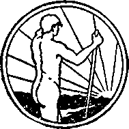

in 2 books
A JOURNAL OF FACT HOPE AND COURAGE
iiiiiiiiiiiiiiiiminiiiiiiiiiiiiiiiiiiiiimiiiiiiiiiiiiiiiiiiiiiiiiii
in this issue
EGYPT
THE LAND THE DEVIL
CLAIMED AS HIS OWN
DROPLETS
AN OPEN LETTER
TO COUNCIL OF CHURCHES
HAS AMERICA FALLEN?
WHOLLY OBEYING JEHOVAH
llllllllllllllllillllllllllllllllllilllllllllllllllllllllllllllllllllllll
every other
WEDNESDAY
U- — - — ~ five cents a copy one dollar a year Canada & Foreign 1.25
Vol. Xin - No. 339
September 14, 1932
CONTENTS
LABOR AND ECONOMICS
Wider Distribution of Wealth . . 787 Our Glorious Civilization . . . 7S8 Common Sense in This . . . 789 Conditions at Oil City . . . .791
SOCIAL AND EDUCATIONAL
Droplets.........787
$75,000 a Day to Deed Suir\ iug . . 787 “No Man Was There to Lead’' . 788 Counterfeiting in Prison . . .788 Charity Racket Hits Snag . . 7^9 Value of Knowledge .... 790 Drug Trade Discovered America 790 Crippled Editor of 12 . . . .791 No Market for Mass Production . 792
MANUFACTURING AND MINING
Gold Mining in Denver City . . 788
FINANCE—COMMERCE—TRANSPORTATION
Loans to Half Million Farmers . 787
Greece and Bulgaria Broke . . 789 What Can They Think? . . . 791
Lee, Higginson Saw Nothing
America Fallen to Shameful
POLITICAL—DOMESTIC AND FOREIGN
Nassau County’s Enthusiastic
India’s 50,000 Political Prisoners 787
SCIENCE AND INVENTION
332 Days in an Oven . . . .787
One Antenna to 3.000 Radio Wets 189
HOME AND HEALTH
Medical Doctors Not Divinely Authorized
When Pyonhea Will Cease . . 187
Natural Appetites on Tristan da
One in Twenty-five Unsound . . 791
Aluminum Utensils in South Africa
Cloves for the Throat .... 799
TRAVEL AND MISCELLANY
Egypt, The Land the Devil
Claimed as His Own . . . 771
A First Giance at Moscow . . 785
Monkeys Stripping Fruit Farms 788
Starvation and Slavery in China 789
Rumania Cannot Pay Help . . 789
Doings in Russia......790
American Jews in Palestine . . 7S0
No Unemployment in Palestine . 791
Oppression of Blacks in Africa . 792
An Open Letter to Federal
Council of Churches . . . 793
RELIGION AND PHILOSOPHY
Wholly Obeying Jehovah God, and the Outcome . . . .795
Published every other Wednesday at 117 Adams Street, Brooklyn, N. Y., U. S. A., by WOODWORTH, KNORR & MARTIN
Copartners and Proprietors Address: 117 Adams Street, Brooklyn, N, Y., U. 8. A, Crayton J. WOODWORTH . . Editor ROBERT J. MARTIN . . Business Manager NATHAN H. KNORR . . Secretary and Treasurer
Five Cents a Copy—$1.00 a Year Make Remittances to THE GOLDEN AGE Notice to Subscribers: For your own safety, remit by postal or express money order. We do not, as a rule, send acknowledgment of a renewal or a new subscription. Renewal blank (carrying notice of expiration) is sent with the journal one month before the subscription expires. Change of address, when requested, may be expected to appear on address label within one month.
Published also in Esperanto, Finnish, German, Japanese, Norwegian, Polish, Swedish,
Offices in Other Countries British............34 Craven Terrace, London, W. 2, England
Canadian ........... 40 Irwin Avenue, Toronto 5, Ontario. Canada Australasian......7 Beresford Rd., Strathfield, N. S. W., Australia
South African.........6 Lelie Street, Cape Town, South Africa
Entered as second-class matter at Brooklyn, N. Y., under the Act of March 3, 1879,
Volume XIII Brooklyn, N. Y-, Wednesday, September 14, 1932 Number 339
Egypt, The Land the Devil Claimed as His Own
EGYPT, probably the oldest country in the world still existing, has the distinction of having been claimed by the Devil himself as his personal possession. (See Judge Rutherford's book Prophecy, pages 138-144. Also see Ezekiel 29:3.) Actually, the earth is the Lord’s and the fullness thereof, and Satan owns not a foot of it, but he has exercised a very unusual control over the affairs of Egypt from earliest times and almost to the present.
There has been a reason for this. Climatic and agricultural conditions are different from those in any other part of the world. When before the Flood some of the children of Adam fared forth from Mesopotamia toward the west, when they got to the valley of the Nile they found conditions in some respects more favorable for simple agricultural people than any they had previously encountered.
The Nile valley was then, as now, a sunken fault in the earth’s surface through which the second longest stream in the world wends its way to the sea, but it was not then, as now, a river which passes for 1600 miles through a desert without a tributary.
Before the Flood heavy mists and dews of the region caused streams to flow into the valley from either side. Erosions of those streams are plainly visible today. Of course, the very much greater erosions caused by the Flood have cut the rocks on either side of the stream still more deeply.
Before the Flood, as now, the Nile brought down from Ethiopia an annual deposit of rich yellow and black mud, which has constituted the real wealth of Egypt in all ages.
The tombs of hundreds of the earliest settlers have been found. In these graves have been found the earliest evidences of idolatry, little figures of men and women. Just what idea the Devil had in getting these early Egyptians to place these little figures of men and women in the graves is a matter of conjecture, but it is certain that they were intended to draw the minds of the mourners away from God, and they probably were used in some way to confirm the Devil’s original lie, “Ye shall not surely die.”
It has been imagined that these little figures of men and women were supposed to be servants or companions for the “spirits” of the departed.
AVe may be certain that there were no deserts upon the earth, and certainly none on either side of the Nile, prior to the Flood. From the proofs presented in Judge Rutherford’s book Creation we conclude that a canopy of waters covered the whole sky, like a vast shining, frosted globe, during the daytime, and as a dim white dome during the nights when the moon was shining upon it. The tiny ice particles were capable of transmitting the light from the sun and the moon and thus bringing heat into the atmosphere under the canopy during the day. The account in Genesis shows that there were breezes and a period on the edge of evening referred to as the cool of the day.
The tombs of those who lived in Egypt before the Flood make no mention of kings, but they do show a proficiency in the technical arts which indicates that they were a people of great intelligence and skill.
Even before the Flood some of these earliest settlers had so far forgotten God that they regarded the heavens as ‘a vast cow with its head in the west, while the belly of the animal, studded with stars, was the arch of heaven. The sun was born from the cow every morning and sailed across the sky in a celestial boat, to arrive in the west as an old man tottering to the grave’.
These early Egyptians buried their dead in gravel tombs on the tops of the plateaus or in coarse limestone graves and covered them over with a roof of baked mud. The short period of the Flood did not materially disturb these tombs. Since then the existing dryness of the climate and the salt in the soil mentioned by several writers have had a preservative effect so that without doubt the tombs found on the tops of the Nile cliffs constitute the oldest cemetery in the world.
The men and women who lived before the Flood were not of unusual stature. If anything, they were rather less than the usual height. The skeletons of the men show a height of only about 5 feet 5 inches, and the women about 5 feet. In these graves were found jars of barley and wheat with the stone tools in general use in that age. Some articles of copper and fragments of linen were also found. It would be hard for a modern workman, with all tools at his command, to make as good a knife as some of the flint knives found in these tombs.
In these earliest tombs of those who lived before the Flood we see the evidences of vanity, traces of which are still present in the earth. Thus in some of them were found stone palettes for grinding paint, probably for purposes of personal adornment.
The pottery of the period before the Flood was not as beautiful as that made in other countries since the Flood, but elaborate vessels were made of alabaster, of granite, and even of diorite, the second hardest stone known, representing an amount of labor that passes belief. The beauty of these earliest vessels is not marred by pictorial decoration, showing that idolatry had not as yet degraded the people to the lowest depths. The copper utensils ranged from needles to axes, and are too numerous to mention. Objects in ivory cover a wide range of articles, including spoons, combs, and the like.
In these earliest tombs the skeleton was always found folded and lying on its side. Mummification was never practiced then. Portions of the skins in which tire bodies were wrapped are occasionally found, as are also necklaces and bracelets of beads and disks of semiprecious metals.
From the stomachs of some of these dried corpses of people who lived before the Flood have been taken remains of fish scales and bones, showing that these early Egyptians sometimes swallowed what they should have rejected. In the stomachs of a number of children were found the remains of the bodies of mice. These little animals had not been accidentally swallowed, but had been skinned before eating. For thousands of years the mouse was a standard remedy of Egyptian physicians and was regularly prescribed for children in extremis.
Egypt at present is of about the area of Arizona, New Mexico and Colorado, but with a fertile territory of only about the area of Massachusetts and Connecticut. It includes the Sinaitic peninsula, as it has done since the beginning of history. Its Mediterranean and Red sea coast line extends 1300 geographic miles, and embraces the three great harbors of Alexandria, Port Said and Suez. One hundred years ago the population of Egypt was less than 2,1)00.000. Forty years ago it was 6,800,000, and in 1927 it was 14,‘186,898.
According to Mohammedan law and custom, real estate is divided equally among all of a man’s children, and, as about 95 percent of the people are Mohammedans and the Mohammedans usually have large families, the land has been very much subdivided. The holdings of any one owner are very small, and the people are all poor.
The winters in Egypt are as gracious as at Miami Beach or San Diego. There is sunshine every day in the year. From November until March the heat is never excessive. One who wears an overcoat in spring at home may wear one with comfort in the evenings and mornings in winter in Egypt, but will not need it in the middle of the day. Rainstorms are rare and, as the houses are not built to withstand them, bring misery to the inhabitants. Dew is heavy in all places where crops grow, but gradually diminishes as one goes up the Nile toward the Sudan. Occasionally there is a heavy shower in the desert which sometimes extends to the Nile valley.
Egypt has always been recognized as being in two parts: Lower Egypt, which includes the delta of the Nile; and Upper Egypt, which includes the long ribbon of verdure of the Nile valley, flanked on either side by the desert. In climate these two regions are quite different. That in the delta has the usual amount of dampness associated with an agricultural region bordering upon the “great sea”, while Upper Egypt is the driest, sunniest region in the world, as the regions in the arctic and antarctic are the cloudiest. The average temperature of Lower Egypt ranges between 75 and 90 degrees in summer and between 40 and 60 degrees in winter. Upper Egypt is about ten degrees warmer.
When walking or riding in the sun in Egypt, at any time of the year, the nape of the neck should be covered so as to avoid the severe headaches and eye troubles liable, to be produced when the nerves in that part of the body are exposed to the powerful rays of the sun.
Some people are much more interested in archaeology than others. We confess that we are not enthusiastic about what has come down to us in these Egyptian tombs; and we have a reason for it. No matter how well you fix it up, there is never anything very enticing about the appearance of a corpse, and even the best methods of embalming are none too good. When kings were embalmed, the brain and other organs were removed and the body was placed in a pan filled with a solution of natron. After some days it was taken out and the cavities were filled with spice and preservatives.
However, after a few thousand years in a dry climate the transfer of a mummy thus prepared is not effected without risk. Thus the mummy of one Queen Nephertari, left only four years in a damp atmosphere, had to be buried because it was decomposing, while the catalog at the Cairo Museum pleasantly announces that the mummy of Aahmes I has suffered a great deal from insects.
A pathological study has been made of 30,000 of these mummies. It was a job unpleasant enough, because they were found as having been afflicted with cancer, gall stones, tuberculosis, gout, abscess, bad teeth and other failings that the rest of us have.
The following is an account of Belzone of his experience among the tombs of Abd el Kurna in 1817:
A vast quantity of dust arises, so fine that it enters into the throat and nostrils, and chokes the nose and mouth to such a degree that it requires great power of lungs to resist it and the strong effluvia of the mummies. This is not all; the entry or passage where the bodies are is roughly cut in the rocks, and the falling of the sand from the upper part or ceiling of the passage causes it to be nearly filled up. In some places there is not more than a vacancy of a foot left, which you must contrive to pass through in creeping posture, like a snail, on pointed and keen stones that cut like glass. . . . though, fortunately, I am destitute of a sense of smelling, I could taste that the mummies were rather unpleasant to swallow. After the exertion of entering into such a place, through a passage of fifty, a hundred, three hundred, or perhaps six hundred yards, nearly overcome, I sought a resting place, found one, and contrived to sit; but when my weight bore on the body of an Egyptian, it crushed it like a bandbox. I naturally had recourse to my hands to sustain my weight, but they found no better support; so that I sunk altogether among the broken mummies, with a crash of bones, rags and wooden cases, which raised such a dust as kept me motionless for quarter of an hour, waiting till it subsided again. I could not remove from the place, however, without increasing it, and every step I took I crushed a mummy in some part or other. Once I was conducted from such a place to another resembling it, through a passage of about twenty feet in length, and no wider than that a body could be forced through. I was choked with mummies, and I could not pass without putting my face in contact with that of some decayed Egyptian. . . . Thus I proceeded from one cave to another, all full of mummies piled up in various ways, some standing, some lying, and some on their heads.—Page 350.
Not many of the great men of the world know as much as they pretend to know, and that is as true of the archeologists as of others. The writer of Today on the Nile, himself an archaeologist, says, “It is almost equally hopeless for the tourist, a business or professional man from America or England, to read understandingly the standard and voluminous histories. Some of them are so out of date that their own authors would not hold the same opinions now.”
He tells of seeing a party of five English ladies and gentlemen ushered into a small annex to a temple, which annex goes by the euphonious name of "birth house”, but was really a room occasionally occupied by women connected with the temple, which women or priestesses had devoted themselves to religious prostitution. In other words, the ladies were “nuns”. When they gave birth to children, as nuns sometimes do, this room was utilized as the birthplace.
Our author goes on to explain that when the Egyptian guide of the party in question announced in fairly good English that this was the ‘birt’ room of Amenhotep III, one officious member of the party explained to the rest that it was the 'burnt’ room of Amenhotep III, the room where he was burned to death. All the rest of the party were edified by his explanation and the Egyptian discreetly kept silence, meantime laughing up his sleeve.
Many people rave over the tombs of the kings because they have paid their good money to travel to Egypt and they feel that they should rave where it is proper for them to rave. As a matter of fact, the limestone rock of which the tombs are built was not difficult to excavate. There is no difficult carving or sculpture work, and much of the decoration is painting on plaster and could be rapidly done by skilled workmen.
There is a lot of chatter about dynasties, but no person knows today just when Menes, the first king of Egypt reigned. But quite certainly it was this side of the Flood, and therefore rather less than 4.400 years ago, and less than 2,500 years before Christ. Quite probably several of the dynasties supposed to follow one another were really in control of different parts of the same country at the same time. Very certainly there were no kings before the Flood.
Archaeologists themselves admit that they know very little about the 9th, 10th, 13th, 14th, 15th, IGth and 17th dynasties. In some instances the mummies and monuments of kings of entire dynasties remain undiscovered and possibly never existed. However, it is admitted that so far the ground has only been scratched, and further discoveries of great importance may be made at any time.
At El Amarnah, the luxury town, where it was planned that only rich folks should live in gorgeous style, in one place a potters vessel was found containing remains of preserved meat which had been canned 3,500 years ago. We hope nobody changed the labels on that pot of beef and resold it as strictly fresh, for we have no appetite for beef more than thirty-five centuries old.
In America we do not have much use for kings; in the Golden Age office, none at all; and so we find it hard to rave over these old Egyptian rulers. There was Thothmes I, who married his own sister Aahmes. Another similar instance is that of Queen Hatasu, who was associated with her father as coruler and married her brother, who was seven years younger than she. We feel sorry for the boy who was taken advantage of by this old woman, but we have to admit that she did set up two great obelisks at Karnak, being imported, polished, set up and inscribed in the short space of seven months, so the inscription informs us. One of them is still standing. It could hardly be done in the United States today in the same time.
Amenemhat, another one of these old birds, is shown in one of the illustrations raising his mace to strike a kneeling captive who begs for mercy. Another picture shows one of these “great’’ kings grasping his enemies by the hair and smiting them with his club. Rameses II seems to have been fond of the ladies, or at least this conclusion might be drawn from the fact that he is down in the records as having 79 sons and 59 daughters, aside from a considerable number that died in infancy. This gent seems to have been well pleased with himself. His statue, estimated to weigh a thousand tons, is the largest statue ever set up. The ear was more than a yard in length, and the foot U/o yards in width. Even though this figure is seated, it boasted a height of 57U> feet.
Rameses IT, in one of his inscriptions, pats himself on the back, praising himself for completing the temple begun by his father. This temple was filled with references and inscriptions in praise of himself, and in some places he cut out his father’s figure and inserted his own. Under the circumstances it seems peculiarly appropriate that practically every donkey driver in Egypt calls his donkey Rameses.
These old roosters not only had their ‘birt’ rooms for the convenience of their nuns, but they wore grave robbers of the worst type. Many of these kings turned their ancestors out of their graves so as to have a comfortable place to lie themselves. Out of the thousands of royal tombs which have been discovered in Egypt, only one, that of King Tut-ankh-amen, was found not disturbed, and that because of the ingenuity with which it was hidden. All the others had been rifled, not only of their costly trimmings and gems, but in nearly every case of their mummies as well.
Behind the temples were rows of brick vaults where these crooked old frauds stored the grain and wine that were paid as taxes.
It is a pleasure to turn from the doings of some of these rulers to think of some of the more noble ones, such as the one who raised Joseph up to power, and the daughter of Pharaoh who rescued Moses and trained him in all the wisdom of the Egyptians. No doubt there were honorable men and women among them, as there are and always have been in every country and in every walk of life.
Ameni, ruler of the Oryz nome under Userte-sen I, tells of the justness of his life and rule.
Not a daughter of a poor man did I wrong, not a widow did I oppress, not a farmer did I oppose, not a herdsman did I hinder. There was not a foreman of five from whom I took his men for the works. There was not a pauper around me, there was not a hungry man in my time. 'When there came years of famine, I arose. I ploughed all the fields of the Oryz nome, to its southern and its northern boundaries. I made its inhabitants live, making provision for them; there was not a hungry man in it, and I gave to the widow as to her that had a husband; nor did I favor the elder above the younger in all that I gave. Afterward the great rises of the Nile came, producing wheat and barley, and producing all things, and I did not exact the arrears of the farm.—Page 215.
In Rosetta, Egypt, officers of the French army under Napoleon found a stone inscribed in ancient Egyptian hieroglyphics, then underneath in ordinary Egyptian characters and finally in Greek. From this stone the first hieroglyphic dictionary was worked out.
The so-called ‘Cleopatra’s needles’, one of which is now in London and one in New York, were in no wise connected with Cleopatra, but were raised at Heliopolis, the reputed birthplace of Moses, by Thothmes III. When the time came to transport these needles, which are about eight feet square at the base by 68 feet in height, the question was up as to how to transport them safely in case a storm should arise while they were in transit. Obviously so great a weight, 168 tons, could hardly be carried safely on the deck of a vessel. The difficulty was ingeniously overcome by cutting a hole in the stern of the vessel and thus allowing the obelisk to lie just where it should, well down in the hold.
Queen Hatshepsut had somewhat the aggressive traits of the old boy friend after whom the Egyptian jackasses are named. She is frequently represented in the monuments as wearing royal male attire because she was more masculine than feminine in her manner. The royal tomb which was prepared for her was never used, but she was buried with the men in the valley of the kings. Some years ago there was found in a remote cleft of the cliffs west of Thebes a beautiful empty quartzite sarcophagus inscribed with her name.
There was a time when we were very much interested in the great pyramid, but not so any more; and if our readers will send to The Watch Tower, Brooklyn, N. Y., and get the issues of The Watchtower for November 15 and December 1, 1928, which they can do for the small sum of ten cents, for the two issues, they can read the whole story there better than we can undertake to tel] it here. Briefly, some of the stones in the pyramid of Gizeh are 30 feet in length and weigh eighty tons. They were quarried on the east side of the Nile and dragged over to the site of the pyramid, no doubt resulting in the death of many slaves. Probably this pyramid and the sphynx were built under the direction of Satan the Devil. We quote two paragraphs from the first of the Watchtower articles mentioned.
The information which Lucifer gained at the laying of the foundation of the earth doubtless included much concerning its measurements and God’s unit of measurements; and by applying such knowledge Satan could put much in the pyramid that would harmonize with truth and which would serve to deceive men.
Based upon astronomical measurements, Professor Smyth concluded that the great pyramid was built in the year 2170 B.C. His conclusion is that at midnight of the autumnal equinox in 2170 B.C. the dragon star, which is a symbol of the Dragon or Devil, shone directly into the entrance of the pyramid of Gizeh; and upon this calculation he fixes the date of its completion. Further (as stated in Scripture Studies, Vol. 3, p. 321), using the ascending passage as though it were a telescope, it is claimed that the Pleiades was exactly in line with the ascending passage at the same time and that therefore the ascending passage pointed toward Jehovah. Admitting, for the sake of the argument, that the Pleiades represents the place of Jehovah’s throne, what would these calculations mean? From the entrance passage the dragon star could be seen, but the ascending passage ends in a dead stone and therefore a view of the Pleiades was impossible. It has always been Satan’s purpose to exalt himself and to push Jehovah out of sight. (2 Cor. 4:3,4) If the above calculations are correct, then such is further corroborative proof that the Devil himself superintended the building of the pyramid of Gizeh.
After the above-mentioned articles were published we noted in The Golden Age that the International Spiritists were holding a meeting in the king’s chamber of the great pyramid. Those who have visited this chamber say that the odor of bats, alive and dead, is prominent.
According to Herodotus, every year, for the three months of the inundation of the Nile, a hundred thousand men were employed for twenty years in the building of the great pyramid. It is said that this structure contains 2,300,000 blocks of stone, each containing an average of forty cubic feet. These stones were joined together so perfectly that neither a needle nor a hair could be inserted into the joints.
Cook’s Travelers’ Handbook for 1920 says, “There is little doubt that the pyramids were erected as royal tombs and nothing else. Numerous other theories have been advanced from time to time: they are ingenious, some of them, but modern research has rejected them all. It is still widely held that they were built for purposes of astronomical observations, and that the Great Pyramid was erected to serve as a standard of measurement; but there is little doubt that they were raised wholly and solely as royal tombs.”
In the year 1196 the son of the emperor Saladin undertook to demolish the red pyramid of Menkara. A large body of engineers and miners pitched camp close by and set vigorously to work. At the end of eight months the treasury was exhausted and the work of destruction abandoned. Today, when one looks at the pyramid itself it is hard to see that it was injured in the least by the removal of the great quantity of stones.
In the year 1922 Howard Carter, who had spent forty years in the valley of the kings in Egypt searching for tombs of royalty, and who had previously discovered the tombs of Thotlimes IV, Amenhotep 1 and the unoccupied tomb of Queen Hatshepsut, was fortunate enough to discover the one tomb of Egyptian royalty, that of Tut-ankh.-amen, which had not been previously disturbed by others. At this point we insert the story of the finding of Tut-ankh-amen’s tomb as it appears in The Golden Age for March 24, 1926.
Everybody has heard of the finding of Tut-ankh-men, the most celebrated archteological item of recent years; perImps more celebrated than really important. There is some reason to suspect that the annual publicity attending this matter for the past three years has had as its partial object the attracting of tourists to Egypt.
The Egyptians of Tut-ankh-amen's time were heathen of course, and held to the heathen belief that every man has a sumid seif, a ka, or soul, or spirit, created within him. which at his death is free to wander at will. And because a ka might continue to get hungry, and must have a place to live, the Egyptians of Tut-ankh-amen’s time embalmed some food for him and also put up some pictures of the dead at the entrance of the tomb, so that the ka would not go wandering around over the earth and not know who he was or where he belonged.
All this is very foolish, of course-, almost as foolish as some of the immortal soul and hell-fire prattle that our own ancestors of the Dark Ages and more recent times have amused themselves with; but in each case it was the best they knew. It merely illustrated the power of Satan and his friends to deceive and blind the minds of men: work in which they are adepts.
Not to speak too lightly of what is strictly a ‘grave’ subject, it is said on good authority that those who tasted some of the embalmed beef that had lain in Tut’s tomb did not find it very palatable. It was in an excellent state of preservation, but neither the embalming fluid nor age had improved its flavor; and if Tut’s ka enjoyed it he. must have had a perverted appetite.
Shortly after the discovery of Tut’s tomb, one of the discoverers. Lord Carnarvon, died from an insect’s bite; and superstition was rife for a time, even among some scientists, that Tut’s ka or ghost had gotten busy and finished him. Lord Carnarvon had been engaged in archaeological work in the Valley of the Kings for sixteen years before his death.
It took three seasons to reach the body of King Tut who, by the way, was but a child when he died; and even before the body was found a dull silk season was turned into an exceedingly profitable one, Egyptian silks suddenly becoming the rage everywhere.
When Tut’s solid gold burial case was finally reached it was found to be so heavy that it required eight men to lift it. Though uncovered months ago, it was not actually transported to the museum at Cairo until late in January of this year. It is the most elaborate burial case known to archaeology.
The wealth of bracelets, jewel-covered clothes and the contents of royal jewel chests sewed into the mummy's clothing left the excavators blase as these objects were taken out hour after hour by the handful. It is said that any one of these articles would in the past have been regarded as the gem of any national collection. The mummy wore sandals of pure gold and had golden stalls on all the finger and toe nails. Gold stars were placed to mark the heart and lungs. King Tut was a lad about fifteen years old at the time of his death.
The ancient Egyptians had a very real hope of a future life, and in it we can see some principles of truth even though most of it was error. They expected that at seme future date, the ka or soul would return to the body and bring about a second life, this time everlasting. It was for this reason that they so carefully preserved the bodies of their dead, so that the ka might have a place to come. The word “mummy" is derived from a word meaning “pitch”, a substance much ust d today in the embalming of people of the middle class. In the middle ages pieces of mummy were used as medieine.
The Egyptians seemed to think either that the average ka would forget much of what he once knew, or else that a l a is not so bright as he ought to be; because it was the custom to place in the tomb with the mummy such playthings as miniature granaries, gardens, stables, breweries, slaughter houses, carpenter shops and other adjuncts of life. Perhaps this was done so that the restored man would have some patterns and tools at hand and know how to go about things when the time came to live again.
Puppets were also buried with these articles, shown in the act of performing various household arts and duties in the fields and on the water; the idea evidently being that by studying these the returned ka could get a line on what he was expected to do in order to make a living.
Moreover, a ka was supposed to need a little assistance in getting about on his spiritual journeys; hence in at least one tomb there was found a sun ship, embellished with gold and jewels, in which a certain queen was expected to make her trips through the heavens. What a shock' it will be to that lady ka when some time she comes to look for her sun ship where it was left in the Egyptian sands, and finds that some inconsiderate soul has lugged it off to a museum, where perhaps she may have to pay a quarter to get even a look at it again!
The fabrics which had lain for thousands of years in King Tut-ankh-amen’s tomb in the dry darkness are now rapidly crumbling and disappearing. Even the efforts of chemists to apply preservatives are of no avail. These things are rapidly passing from what is tangible to the domain of thought. Thus is brought home the* truth that nothing man can do is lasting. Every tomb in Egypt, except King Tut-ankh-amen’s, was rifled, and finally his was rifled, too, and the rifled articles are disappearing in plain sight of those who most wish to preserve them.
The Sphinx was not built up, but was hewn from the solid rock. Pieces of stone were added to fill out the contour where necessary. The body is about 150 feet long, the paws are 50 feet long, and the head 30 feet. The face is 14 feet wide, and from the top of the head to the base of the monument is GG feet. The only thing positively known about the Sphinx is that it was repaireel in the reign of Thothmes IV, supposed to have reigned 1450 B.C.
In Egypt, as everywhere else, the Devil has done all possible to magnify his original lie, “Ye shall not surely die,” and to glorify himself and his false religion at the expense of Jehovah God and the truth. We have already given some details of their foolish ideas which he succeeded in getting the ancient Egyptians to believe. We now amplify this somewhat. He deceived the Egyptians into thinking that each person comprised four different entities, each complete in itself but in life all joined together in the body. The author of Today on the Nile says on this subject:
These elements were the body, the double or ka, the soul (Ba), and the Khu, the “Luminous" or divine spark. The Ka was a sort of spiritual body, corresponding to the real body; that is, the Ka of a man was thought of as and represented as a man, that of a woman as a woman, and that of a child as a child. In statues and sculptures it is always represented as naked and with its own peculiar sign, two uplifted arms above the head. During life it was bound to the body and never left it, and after death it remained with the mummy in the tomb. It required food and drink, which had to be provided by the living. The mummy and the Ka stayed in the tomb, while the Ba and the Khu went to the regions of the gods. They, however, were supposed to visit the mummy and Ka at frequent intervals. A man’s life on earth was comparatively short, while his existence in the tomb would be endless. So the tomb was regarded as a dwellinghouse, the “eternal home." of the soul, and it was built to meet the requirements of the deceased in his life after death. It always has three parts: the public rooms, the private apartments of the soul, and the connecting shaft or corridor. The friends and relatives assembled in the public rooms at the time of burial and on stated occasions thereafter. Here they brought their offerings of food for the Ka. These rooms were usually above ground or in the side of a cliff. They were well lighted and ornamented with scenes from the life of the departed. Thus the Ka would be continually reminded of his early existence. —Page 27.
The general plan of all the royal tombs was the same, showing that the Devil was hack of the whole thing. William Reavell, president of the British Institution of Mechanical Engineers, claims to have discovered how the talking colossus of Thebes, the grunting idol of Luxor and the shaking statue of Namur wrere manipulated by compressed air, by delicate balance wheels and shafts and by clever leverage systems. He says, “In some instances the burning Egyptian sun itself furnished the power to cause a majestic arm, weighing of itself several hundred tons, to move a perceptible distance.”
At the time he invented the Egyptian system of religion the Devil had not yet become so steeped in wickedness as to teach a place of eternal torture for the wicked. He merely allowed the ancient Egyptians to believe that if a soul was condemned by the tribunal of Osiris (himself) it was immediately devoured by the waiting dog, that is, annihilated.
He kidded the rich into thinking that they would be rich hereafter and that those who had been poor here would be poor hereafter. But this would not be until the resurrection or the reunion of the ba, ka and khu and the body. He managed to make the poor things believe in 438 gods, but, of course, the name of Jehovah, the one true and only God was not in the list.
So conservative are Egyptian people that to this day houses are built over the graves just as in olden times, and on stated occasions the family and friends assemble to pray for and live with their dead. The poorer classes take a tent with them for the occasion, while the rulers have a mosque. This is almost exactly the same as was done in ancient times.
The original practice of placing in the tomb everything that the ka or soul of the dead man could possibly need was subsequently modified so that pictures of the things he would need ■were substituted for the realities. From this it will be seen that the first kas got a good deal, but the poor sinners in after centuries who wanted to get anything had to take it out in looking at a picture of it.
So now we see what all the illustrations in the Egyptian tombs are about. They are intended to show these poor, benighted, wandering kas or souls how to slay animals, bake, cook, to prepare and use arms and standards, and how to use many vases, jars, bottles, elephant tusks, etc. Little cones of baked clay found in the tombs are supposed to represent loaves of bread, the sight of which would, in some magical way, furnish sustenance to a hungry ka, and as he would need spiritual guidance, copies of the book of the dead, more or less complete, were placed in the coflin. In some instances the embalmed remains of pets were also buried with the deceased. How eager the Devil has been to make fools of the human family and thus to reproach the Creator.
In some of the tombs there were portraits of the deceased. In modern Italian cemeteries, also, it is customary to place a photograph over the tomb, that relatives may still see the familiar features.
In reading about Egyptian tombs one frequently runs across the expression “the scarab”, or this or that “scarab”. It should be explained that the scarab is the image of the common black beetle. This insect lays its eggs in balls of dung and in due time they produce the young beetles, in the eyes of an unscientific observer, from nothing.
The Egyptians therefore regarded the scarab or dung beetle as typical of immortality. How like the Devil to find in such an item a means for reproaching Almighty God and glorifying the doctrine of his own invention!
The teachings and practices of the Mohammedans are not quite as crude as those of the ancient Egyptians, but they are almost as much so. As already shown, they are much alike, because the Devil was the author of both of them.
What could be more disgusting or foolish than the antics of the howling dervishes, whirling dervishes, dancing dervishes or wandering dervishes of the Mohammedan religion. How could anybody be led to suppose that Almighty God would have the least interest in anything of the kind ?
The city of Cairo contains 400 mosques, every one of which is a center of superstition. The sheik Selim was so holy that he sat naked for 53 years on the banks of the Nile at the holy city or village of Hou. Another holy Mohammedan, Ahmed, a descendant of Mohammed, wore two veils so that his glances, which were said to be death-dealing, might not injure those on whom he looked. He wore his turban and clothes until they dropped off him. How delightful the aroma of his presence must have been!
In the Moslem month of Ramadan no Mohammedan will make an important political move, because it is a ‘’holy" month; but at any other time of the year, look out. If you point a finger at him he is likely to explode.
In 191)2 a headman of a small native village near Assiut went on a pilgrimage to Mecca and brought back with him a bottle of water from the “holy’’ well Zem Zein. All the inhabitants wanted to drink some of the “holy’’ water; but, as it was impossible to divide so small a quantity among so many persons, the brilliant idea was conceived of pouring it into the village well. As the water was teeming with cholera germs and the natives drank of it liberally, the result was that 40,000 cholera victims were carried off before the plague was got under control. It seems that the water of Zem Zem was sure to take one to “Paradise-’, but in this instance it acted more quickly than usual.
Another route to “Paradise” is the vaccination route. Vaccination is compulsory for both Europeans and Egyptians and must be carried out before a child attains the age of three months. Pieces of mummy were once used as medicine. Vaccination makes a peculiar appeal to the Mohammedan mind.
The unfortunate Egyptian people, have been terribly oppressed by the drug habit. Out of a population of 15,000,000, including Europeans, it is estimated that more than 500,000 are habitual users of narcotic drugs and that $25,000,000 are spent annually on the purchase of these narcotics.
There is not much to be said about education in any country that is under the control of Mohammedan priests, or any priests. In the year 1927 the proportion of illiterate in Egypt was 89.2 percent, and that speaks for itself.
Yet at Cairo is the location of El Azhar, the largest Moslem university in the world. This school, founded in A.D. 970 had 4,838 students in the winter of 1926 and 1927. No student in this university is obliged to pay for instruction, and the professors frequently teach for nothing. Many of the students are the sons of the fellahin, or poor peasants.
There is in Cairo one native paper, with a circulation of about 20,000 copies. In all towns the mosques serve the purpose of town halls and are open to political speakers of all religious faiths.
Lest we think too hastily and too lightly of Egyptian education, let us not forget that thousands of years before the Christian era there was in use in Egypt a calendar year of 365 days. At an exhibition held in the Science Museum, South Kensington, London, recently, it was shown that there is little or no difference between the scales used today and those that were used in Egypt 4,000 years ago.
As Herodotus puts it, Egypt is “the gift of the Nile”. If the Nile were to cease, Egypt would die surely and quickly. From its remote source near Lake Tanganyika to the sea the Nile is more than 4,000 miles long. It is thus but little shorter than the Mississippi-Missouri river, the total length of which is given as about 4,200 miles.
The most remarkable feature about the Nile is its annual regular increase arising from the rains which fall in the equatorial regions of Africa and in Abyssinia. The river begins to rise about the middle of June and continues to increase until about the end of September. It then remains stationary for a short time, gradually retreating in January, February and March, and reaching its lowest levels in April, May and early June.
One of the great reservoirs of the Nile is- the Victoria Nyanza, next to Lake Superior the greatest fresh water lake in the world. Other reservoirs are Lake Albert Nyanza and, in more recent times, the great barrages of Assuan, just below the first cataract, and Assiut, midway from there to the sea.
As rain rarely falls in Egypt, the prosperity of the country depends entirely on the overflowing of the Nile. As the water subsides the land is found covered with a brown, slimy deposit which so enriches the soil that it produces two crops a year. The overflow water is now managed artificially by reservoirs and canals so that after the river subsides it may be used as required. The seven years of famine in Joseph’s time were the result of an insufficient rise of the Nile, in other words, a lack of rain, ‘world-wide’; and rain is a gift of God.
On the headwaters of the Nile (the one that passes through Lake Victoria Nyanza) the rain falls from April to October, with a maximum in August. In Abyssinia, the headwaters of the Blue Nile, and the Atbara, the heavy rains also come in August. It takes fifty days for the flood waters of the White Nile to travel from the lakes to the sea, and twenty-five days for the Blue Nile. Therefore the full effect of the rise of all these streams reaches Egypt early in October.
The ancient Egyptians recognized fully the importance to their country of the overflow of the Nile and in very early times registered its height at Assuan, yet, so far as we know, though they performed an even greater but useless feat in the construction of the pyramids, no attempt was ever made by them to build a dam or barrage across the main stream of the Nile.
At the time it was completed, the great dam at Assuan, 1% miles long and in places 100 feet high, was the largest work of its kind in the world. It is calculated that it impounds more than a thousand million cubic meters of water. The cost was about ten million dollars. The water’ is not intended to benefit the country south of Cairo, but is wholly intended for the great delta. The water is stored at Assuan, 587 miles from Cairo, then let down to the Assiut barrage and then to the barrage below Cairo, whence it is distributed to the Delta by the lower branches of the Nile and numerous canals.
For 600 miles after it emerges from Lake Victoria Nyanza the White Nile flows through a country of such luxuriant vegetation that the channel of the river becomes periodically filled with floating vegetable matter called “sud”. This sud often and quickly grows from shore to shore so that the steamers cannot find their way through it. This constitutes one of the most peculiar obstacles to navigation encountered anywhere in the world. At present this part of the Nile journey is made by automobile.
The Nile is not devoid of natural scenery. For some distance south of Assuan its banks are mountains 3,000 feet high, while at Luxor, halfway between Assuan and Assiut, the hills fall back from the shore on both sides and the views from the deck of the steamer are especially beautiful.
Luxor is considered one of the most desirable winter resorts in the Eastern Hemisphere. The days are warm, the nights are cool, the air is dry, and the sun is always shining. It has several fine hotels and is a world-famous resort for persons suffering from tuberculosis.
In the wintertime the wind blows steadily from the north, with enough strength to propel sailboats against the stream; and while travel today is largely by rail or by steamer, yet even today one can, if he desires, make the trip from Cairo south in a dahabeah, a kind of large house boat with sails; but he had better not go by that route unless time hangs heavily on his hands.
In Egypt they are not in so much of a hurry to do things as they are in the United States. For instance, the drawbridges across the Nile are open only at certain fixed hours, and when they open they stay open for hours at a time. As a consequence, traffic on both the river and the highways crossing it is tied up for hours at a stretch. But the Egyptian does not mind. He figures that what he did not do yesterday he can do today, and what he cannot do today he can do tomorrow.
Although there arc many places in northern Egypt where powerful steam pumps are in use for irrigation purposes, yet the shadoof is still in use. The shadoof consists of a leather bucket slung at one end of a pole which has a weight at the other end and sways up and down on a vertical support. By this contrivance a cultivator can scoop up the water considerably below’ his feet and raise it with comparative ease to the level of his breast. Sometimes there are several shadoofs rising one above another when it is desired to lift the water to considerable heights.
The sakiyeh is another device for hoisting water. It consists of an endless chain of earthen jars connected with a sprocket wheel, the power for which is furnished by domestic animals.
The invention of the basin system of irrigation is credited to King Mena, the first king of Egypt (after the Flood). This system is still used for all land between the barrages of Assuan and Assiut. The land is divided into rectangular areas about 5,000 to 50,000 acres in size. Water is admitted to these basins during the flood period in August to an average depth of three feet, and is left on the land for forty days. It is Hum run off and the seed is sown broadcast on the uncovered land.
About 1S20 Muhammed Ali abandoned the basin system of irrigation for Lower Egypt because he found that the cotton which he desired to raise would grow better if irrigated all the year around. The old basins were neglected and the embankments plowed up, and now the rich mud deposit which constituted the wealth of Lover Egypt for thousands of years can no longer be secured to renovate the land.
The farmers of Lower Egypt are already beginning to miss the wealth that was brought to them by the annual mud deposit and are finding it necessary to purchase fertilizers to prevent rapid impoverishment of the land.
The ultimate purpose is to abandon the basin system of irrigation all over Egypt, because under the perennial system two or three crops a year are grown. By the basin system only one is possible.
Muhammed Ali, who built the first barrage 15 miles north of Cairo, cast about for materials and ordered that the pyramids should be pulled down so that their stones could be used, and he abandoned the plan only when it was proved to him that it would cost far less to bring the stones from the quarries.
The life of Egypt depends upon irrigation. When the rise of the river at Assuan is only 21 feet there is a famine in parts of Upper Egypt. When there is a rise of 25 feet certain lands will be watered only with difficulty. When the rise is 26]/o feet the whole country can be watered: and with a rise of 28 feet the country is flooded and great misery and ruin follow.
As a result of building the great dams the winters are less dry and the summers less hot, yet the air is always light, fresh and invigorating, and in places away from the cultivated lands only a small amount of moisture exists in it. There is a project on foot to electrify the whole of Flgypt by using the Assuan Dam water as a source of power.
Though the system of “corvee” or forced labor has been abolished, yet in flood time the inhabitants are still called out to guard or repair the Nile banks.
Progress and Conservatism in Farming
Although labor-saving machinery of the most advanced type is to be found, yet, side by side with it, there are in use agricultural implements similar to those shown in the earliest Egyptian tombs. Threshing is done precisely as it was done 4,000 years ago Some of the natives still employ shadow clocks exactly the same as were used in the days of the I'haraohs; and, because their ancestors had no wheelbarrows in which to convey their loads, several million Egyptian farmers still carry dirt and fertilizer for the crops in baskets.
Wood has always been scarce in Egypt, although there are some seventy species of date palms, and its fruit is a staple food. Oranges, lemons and pomegranates, figs, apricots, peaches and grapes are also abundant. Egypt has a law against the raising of tobacco. None is allowed to be raised in the country.
The farms are very small. Where the unit of cotton production in our southern states is twenty acres and the mule, in Egypt the unit is two acres and all the work is done by hand. The average Egyptian farm is all together, only about 3i/2 acres.
The milk supply is obtained chiefly from the ugly and awkward water buffalo. This beast requires less food and gives more milk than the Egyptian cow, and is less susceptible to diseases. Dogs are plentiful, noisy and a nuisance.
The staple crops are cotton, sugar cane, wheat and rice. Watermelons are largely grown and were popular in the days of the Pharaohs. Roses, oleanders, carnations, geraniums, and poinsettias thrive; and within recent years there have been extensive plantings of the lebbek tree, which grows to a height of eighty feet and is valuable for shade and wood.
West of the Nile are several great oases, one of them a hundred miles long. In one of these, artesian wells are numerous, and some of ancient construction have been discovered which have a depth exceeding 400 feet. For a brief season in February and early March the Libyan Desert is said to be one grand garden of wild flowers. The wilderness literally breaks forth into blossom.
Transportation Arrangements
Egypt has 2,995 miles of railroads, mostly owned and operated by the state. The line to Khartum and the Sudan was built by engineers as a military road, but has paid for itself as a commercial enterprise. The conquest of Khartum would have been impossible without this line, and it was built several hundred miles across the Libyan Desert in jig time.
Where the railway crosses the Atbara river, a great stream flowing into the Nile from northern Abyssinia, there is a magnificent iron bridge of six spans, each two hundred feet long. This bridge was built by an American company because speed in its construction was a prime necessity, as the advance of the army could only keep pace with the railway. The Americans got the contract because they could (and did) build it in a remarkably short time.
The Sudan Government Railway is considered the most comfortable in Africa. Coaches and sleepers are kept scrupulously clean. They contain every possible protection against the sun, the dust and sand storms. These de luxe trains are operated twice a week.
When the first locomotive reached Berber, two hundred miles north of Khartum, many of the natives hastened to touch its oily, dusty tender, believing it to possess magical powers. Some of these declared that the touch had cured their ailments. The fame of this locomotive, breathing fire and smoke, did as much to spread terror throughout the Sudan as Kitchener’s army itself.
Though the highways of Egypt are in wretched condition, yet the entire delta now has a network of motor-bus lines. The natives seem to be speed-mad and buses with rickety wooden tops go full speed over rutty, slippery roads, groaning, crashing, staggering along, occasionally landing some of their patrons “in the next world”, or, at least, taking them out of this one. Not long ago one of these buses skidded into a canal and only four out of thirty-two passengers escaped uninjured.
And now there is air service and Egypt has become one of the air centers of the world. There is an air service from London to India, via Alexandria, and another one from London to Cape Town, via Alexandria. Thus Egypt and the Sudan are well supplied with air transport.
There is no workable coal in Egypt. All the supplies, even for the Sudan, are brought in from England.
Alexandria, founded in 332 B.C. by Alexander the great, was at one time the most famous city in the world. Its present population is 573,063. It was 300,000 in the year 50 B.C. Alexandria has always had its Christians, such as they were. In the reign of Theodosius I several monks became offended at Hypatia, a beautiful and learned woman, dragged her from her chariot into a ‘church’, stripped her of her clothing, scraped her flesh with metal combs, and then tore her limb from limb.
During the siege of Alexandria in 1801, the British, aware that the land around the city was below sea level, cut a channel and inundated the country with salt water. They thus destroyed 150 villages and wasted a vast quantity of fertile land, some 77 square miles of which are still covered.
Alexandria has one of the best harbors in the world. One of the first of Alexander's works was the construction of a mole, joining the island to the continent, thus providing a double harbor sufficient to shelter the navies of the world. In midsummer Alexandria is the only place in Egypt that remains cool.
The population of Cairo is 1,064,567. It is chiefly noteworthy as the center of Islamism. The merchants of Cairo are famous over the earth for the way they do business. When asked to name a price, the Cairene merchant always mentions a figure which is enormously in excess of the value of the article, knowing full well that sooner or later he will be obliged to reduce his price to a more reasonable amount. With these merchants time is no object, and their conception of business is to haggle and bargain at length with all their customers. Assiut is the largest city south of Cairo. It has a population of about 50,000, and is famous for its pottery.
Ninety-two percent of the population of Egypt are descendants of the Arab tribes who settled in Egypt after the conquest of the country by the armies of the Caliph Omar, in the year 641 (A.D.). These poor creatures live in miserable dwellings consisting of four low walls made of mud brick, and roofed with a thatch of straw.
The furniture is of the simplest. Much of the food is eaten raw. The staple foods are corn and sweet potatoes. The Egyptian sweet potato is a rather tasteless, unsatisfactory product.
When dinner is ready the family and guests help themselves with their fingers out of a common bowl in the middle of the table. If a guest seems to eat too little, the host favors him by tearing off bits of meat with his own fingers and handing them over for consumption. When laboring in the field their clothing is of the scantiest, and not very elaborate at any time.
The fellahin. as these Arab natives are called, are as a whole a peaceful, amiable and industrious people. In early life they become burdened with care and poverty and are beset by many disagreeable ailments, chiefly ophthalmia, a disease of the eye.
Their women are never seen to smile or gesticulate, nor fly into a temper, but are sad-eyed, of erect bearing, and with delicately chiseled features that would mark them as distinguished anywhere. When a young Egyptian man desires to marry, some of the women in his family look out for him for a suitable partner.
The so-called “Christians” of Egypt, about three quarters of a million, are nearly all Copts. These are the real descendants of the ancient Egyptians. They are said to hate other Christians more bitterly than they hate the Mohammedans. They are said, oven by their own people, to be sullen, greedy and pursuing education merely for the love of personal gain. Nevertheless they are considered to be the ablest and most intellectual of all the natives of Egypt.
The Suez Canal was built at the expense of the Egyptians. The French took the profits and the British took the canal. The British regard the canal as vital to their scheme of empire, and that is the reason they have hung on to it and continue to keep Egypt under their thumb.
This is very distasteful to the Egyptians, but despite all objections, and all promises to the contrary, the British are in Egypt as the real rulers of the country, and there they remain whether the Egyptians like it or not. Once in a while there is a patriotic outburst, but in the end it settles down to the Egyptians’ doing the talking and shouting and hooting and the British running things to suit themselves.
It is surprising how thoroughly a handful of determined men can retain control of a country of several million people. Some of the things the British have contrived to do are comical in the extreme. Thus a large number of the Nationalists, the Egyptian patriotic party, broke through the police cordon at the Cairo railroad station and filled the train which they expected would take them to Tanta, where they had planned a great demonstration of their opposition to the British rule. A short distance out of the city of Cairo the cars in which they were riding were left on a siding and the train ran off without them.
Elections are held, but they are meaningless, as they are merely intended to act as instruments of British policy. In an effort to compel the people to vote many persons were killed in Cairo in a single day, and about 300 wounded. When a train drew into DeKernis, Egypt, bearing a government official, the police ordered the crowd to cheer. When they refused the police fired on them, killing one man and seriously wounding seven. In eight years Egypt has had sixteen different cabinets. The people are taxed beyond the limit of their powers to produce, and are in despair because they do not see the way out. And there is only one way: God’s way.
Egypt is today probably the only country in the world where the foreigner may be wealthy all his life and die a millionaire and yet neither during his life nor at his death contribute one cent toward the administration that has protected his wealth for him and his heirs. Egypt is probably the only country in the world where a foreigner, an adulterator of foodstuffs, can escape by a fine of one pound or seven days in prison, whereas, if committed by a native, the same offense would he punishable by three or four years in prison with hard labor.
Egypt is probably the only land in the world where a native can borrow the name of a foreigner and operate opium dems, brothels and kindred institutions under foreign management and in direct violation of the laws of his own land.
If a gambling den is opened by a native in his own name, the Egyptian police can close it at once; but if it is opened in the name of a foreign resident, the police cannot enter his house without the consent of his consul and the company of consular officials. Foreign criminals not only are tried in separate courts, but are imprisoned in separate departments of the prisons, where they enjoy much greater comfort than their Egyptian fellow prisoners.
From what has been said it should be evident that the poor natives of Egypt have a pretty hard time of it. The writer of Today on the Nile advises visitors to Egypt to buy for their use a hippopotamus-hide whip made in the Sudan. He says, in the most matter of fact way: “In Egypt, also, one of them will be found very useful. Nothing equals it in quieting a turbulent mob of donkey boys, beggars or peddlars. A smart, stinging lash on the ankle bone is the proper thing and will distract the attention wonderfully. I have never known it to fail.”
There are about 30,000 Jews in Egypt, and about the same number of Turkish subjects. These men occupy most of the best positions in the country. The greater part of the trade of Alexandria is in the hands of Greek merchants, many of whom are famous for their wealth.
The Bedouin tribes of the north are notable for their independence, courage, dignity, hospitality and cleanliness, while, oddly enough, the Bedouins of the south are almost the opposite, priding themselves on their long black hair done up with grease and having a fondness for dirt.
Smallpox and other plagues are often rife in their dwellings. The most desirable natives to the south of Assuan are the jet-black Nubians oi’ Berbers. They have proved to be excellent servants in Africa as men of their color have proved to be excellent servants in America.
In 1927 the British residents numbered 26,000, while in 1930 the British garrison numbered 9,969. Great Britain is the official adviser of the government of Egypt and her advice must be accepted and followed, which means, of course, that she is the real ruler. Egyptian patriots complain that after having been promised freedom some sixty-odd times by the British government they find it difficult now to have any confidence in British policies. The Egyptians cannot altogether forget that in the World War they served in the military labor corps under a form of conscription, nor can they forget that at the same time their corn and animals were commandeered.
Many years ago Roosevelt advised the British to govern or get out. They continue to govern, and they don't get out. It is hard for two people out of a thousand to govern 998 people who do not want to be governed, but the British manage to do it by giving the Egyptians a “king”, whose business it is to dress up nice and pretty and to eat three meals a day.
There is a notable parallelism between the control of the Suez Canal by the British and the control of the Panama Canal by the Americans. In each instance the initial steps in the building of the canal were taken by the French. In each instance the country that originally owned the land through which the canal passes was injured rather than helped by the intrusion of the great English-speaking nation into its affairs, and in each instance many thousands of miles were saved by such English-speaking nations in communicating by steamer with the different portions of the world under their flag.
The inauguration of the Suez Canal took place on November 16, 1869. At the opening ball 6,000 persons were present, of whom 2,000 were uninvited guests. The inaugural fetes lasted several weeks and are said to have cost $20,000,000, all of which came out of the poor Egyptians. The length of the Suez Canal is a hundred miles; the width at the widest part is about 300 yards. About sixty miles of the canal’s course lies through the so-called Bitter Lakes. The saving of distance effected by English ships bound for the East is 4,840 miles.
While Egypt claims the Sudan as an integral part of its country, yet the British government was the one that reconquered that great territory after the Egyptians had been expelled from it, and now announce officially as a fixed policy that it will never abandon the Sudan nor tolerate any attempt to disturb its administration. The Sudan is a great country. It extends through nearly twenty degrees of latitude, all in the tropics. Almost all of it is habitable, or can be made so. It is already producing cotton in immense quantities and provides England with a great part of its requirements of this essential staple. The Sudan is the principal source of the world's supply of gum and ivory. For years Egypt has depended to a great extent upon the Sudan for its meat supply.
Khartum, the capital, stands 1200 feet above sea level and has an ideal climate from December to March. The population of the Sudan in 1928 was 5,483,839. Its area is 1,014,600 square miles.
It cannot be denied that the British are one of the most enterprising peoples in the world.
When they first came into the Sudan it was the center of slavery and a breeding-place of insurrections and of disease. Today Khartum, the capital, has electric lights, electric street cars, improved streets and good hotels. The British are there because the Sudan can supply them with cotton and other things they need and it is a part of their Cape-to-Cairo plan for the domination of Africa. There is no chance whatever that they would either leave the Sudan or be put out of the Sudan until God’s kingdom reigns triumphant over the whole world, and the poor Egyptians and Sudanese and all the other subject peoples of the world have presented to them as a gift the desire of all nations, the kingdom of God.
(From a personal letter)
WE ARE in love with Moscow, both of us.
It's a splendid old city, beautiful buildings, the finest theaters imaginable, and crowded, gay streets. The whole atmosphere of the place, however, is so new and so different that I feel as though I hadn’t got below the surface yet. The very newness of it is stunning just at first. The first impression one gets is of crowds; the streets, parks and street cars are just thick, day and night. It seems everybody is constantly on the move.
The working hours in most places that I know of are splendid, from ten a.m. to four-thirty, so that leaves a nice long evening for lectures, theaters, etc.
Even the museums and art galleries are crowded, groups of peasants wandering around, pausing before pictures depicting their own life, groups of Red Army soldiers being shown around, having each picture or each exhibit explained, school children with their teachers, groups of factory workers with their guides. It is more fascinating to watch the people who file past than the exhibits on the walls.
S—— and I both have splendid jobs; the very first we applied for were given us. I have the very job I’ve always dreamt of, that of translator on an English newspaper published in Moscow, while S---- is junior engineer in a
dirigible construction plant. Could anything be better? Imagine a country these days where there are more jobs than applicants 1
The only difficulty is the finding of living quarters. The city is terribly overcrowded. In the meantime we are staying with the A----s.
They are just fine, both working, have a nice, modern apartment. The children are all at school, the little girl in kindergarten; the boys are taking up engineering in a technological institute. They are splendid, well brought-up young chaps.
(Reprinted from Journal of the American Medical Association)
TT IS difficult to understand when or how the fiction arose that the medical profession is a divinely authorized and chosen class, charged with the protection of the public health and public welfare, even against the desires and the wishes of the people themselves. Such a doctrine savors far too much of imperialism to be particularly popular at the present day.
Suppose that the owners of automobiles should appear each year before legislatures, asking for the passage of laws restricting the use of automobiles to certain individuals; that they should insist that the membership of all boards, and the appointment of all administrative officers in carrying out these regulations should be controlled by automobile owners, and that only those persons who owned a certain kind of automobile should be permitted to have a license. Can you imagine the shout of derision that would go up from the people of the state at such a request? Yet this proposition is identical with the method now existing for the regulation of the practice of medicine.
FOR reasons best known to themselves four young men recently raided a home at Roslyn Heights. Nassau county, N. Y., demanding a quantity of liquor which they claimed was cached there. Possibly they did not know that the home was also the home of the county detective, or possibly they did. In any event they beat and robbed the mother of the detective, a wretched crime.
Thereafter, four young men were arrested, charged with the crime, and an eleven hours’ examination by the police began. Despite the advice of one of the detectives that in manhandling these prisoners care should be taken not to mark up their faces, one of them was declared by his lawyer to have had his ear torn and his eyes blackened and to have had his body covered with bruises and black and blue marks all over it. He is said to have been punched, kicked, beaten with a rubber hose, and pulled along a corridor by his hair. The law presumes every man innocent until he is proven guilty, and it is not claimed that these assaults by officers of the law were legal.
When officers of the law got too enthusiastic in their examination of supposed offenders they sometimes go a step farther than they intend. Perhaps that was the case in the attacks at Mineola. In any event, as the district attorney of the county succinctly expressed his view of the murder of one of these boys at the abovenamed “examination”, “Apparently an over-enthusiastic police officer broke Stark's Adam’s apple.” What resulted was that one of these boys was strangled to death, and it will be necessary to chide somebody gently before the thing is hushed up.
Thirteen policemen have been suspended because of the murder. On the record it is certain that many of these officers of the law are murderers and perjurers and that none of them can be believed. They are known to have beaten four men with strips of rubber hose, blows with fists and feet, blackjacks, a heavy ledger and a shoe, but all tried to lie out of it.
The deputy chief of police was accused of having stood with one foot on the man’s stomach and the other on his neck and rocked back and forth, just before his Adam's apple was bursted and he died of strangulation. As he is the acknowledged republican leader of Oyster Bay, it is certain that no harm will come to him. The liars stood by one another loyally, beautifully.
At the moment it appears that if anyone has an ambition to commit murder, and to do it without any risk to himself, the best thing he can do is to get a place on the Nassau county police force. It would be hard to imagine four more evil-looking faces than those of four of the men involved that have been held for second degree murder in this case.
If pictures go for anything, the young man that was murdered looks like a saint with wings compared to the four ruffians that are charged with butchering him in the Mineola police headquarters. His sister claims that he was a good boy; but he was probably a bad one, though certainly not one bad enough to have had a place on the Nassau county police force.
The men charged with the murder are also charged with perjury and with conspiracy. A look at their faces is enough to indicate the substantial truth of the charges. Brutality, a desire to assault, to kick, to beat, to choke and to murder, is self-evident in the faces of all. Fierceness, not intelligence, brute force, not wisdom, is manifestly their natural forte.
It is noteworthy that though these men committed a murder their fellow officers did not beat or choke or kill any of them in the effort to fix the real blame. On the contrary, they lied for them, shielded them, and did all possible to obstruct justice. Thirteen of the officers are held on the latter charges. It was a peach of a police force, almost as bad as Jersey's.
The worst part of it is that the guilt of the boy that was murdered had already been well established. He was butchered in the Mineola police headquarters just because the four or more men who broke his Adam’s apple wanted to beat somebody, for attempting to hijack liquor from a fellow officer's home, and for misusing his mother, and wanted to do it under the most favorable auspices.
They probably did not intend to actually kill him. They were merely letting their desire to beat and kick and choke have free play, and just happened to go a step too far. They held the law in infinite contempt, and do yet. It will be quite inconvenient for them for a little while, but it is an election year, and such men are always useful and influential to rascals higher up, and there is no danger that they will be seriously inconvenienced.
AFTER twenty years of blindness Jacob ‘VJ7’HEN Andrew Mellon told his British hear-Lieberman of New York sees again. A ers that “none of us has any means of
successful operation for bilateral cataract has given this 87-year-old man a new lease on life.
THERE are 88 lawyers in Jerusalem, 64 in Tel-Aviv, 36 in Haifa, and 28 in Jaffa. They are mostly paid in barter, often in chickens and eggs.
A MEMPHIS man, terribly burned, so much so that his life was despaired of, was kept 332 days in an electric oven at a temperature of 103 degrees and is gradually forming new skin and recovering.
VOLCANIC eruptions and rivers of mud in
Java, several times ten thousand slain by earthquakes in China, and now the Aleutian Islands rocking with earthquakes like ships at sea, all tell us the earth is still in travail.
IN INDIA at the moment there are said to be
50,000 political prisoners. Short-term prisoners accused of all sorts of crimes have been released so that all of the outstanding leaders of the independence movement might be jailed.
IT IS claimed that with the repeal of prohibition in Finland drunkenness has decreased, bootlegging has disappeared, the crime rate is lower, and the government is getting more revenue w’ithout raising taxes.
William Green, president of the American
Federation of Labor, in an address in Manhattan, Kansas, said very truly: “The earnings of industry and of industrial enterprises must be more equitably distributed so that buying power may be made more uniform and active. The number of days worked per week and the number of hours worked per day must be reduced so that the evils of unemployment may be reduced to a minimum. We cannot install machinery and maintain the long workweek and the long workday.”
knowing when and how we shall emerge from the valley of depression in which the world is now traveling” he certainly told all he knew on that very interesting subject.
PYORRHEA will cease when men and women eat more apples, oranges and grapes and less white-flour concoctions, white potatoes and pork. Meantime all the tooth pastes and creams afford no help except to the pockets of their makers.
TO ENABLE them to put in their 1932 crops the Government, through the Department of Agriculture, has made loans to 449,000 farmers. The average loan is of but $126. In North Dakota there is a loan for every 2.3 farmers in the state.
NO DOUBT feeling that he ought to get something in return for all the millions he has given the Baptist church that institution has presented John D. Rockefeller, Sr., with a medal bearing the inscription: “To the Knight of the Kingdom of God.”
SOME idea of the extent of the destitution in
New York city may be derived from the fact that upward of $75,000 daily is expended through the public welfare department to feed people who would otherwise have nothing to eat. The food is limited to the plainest; there are no luxuries provided.
i Wage Cuts Go to Stockholders
FOLLOWING a 10-percent cut of wages last October, the Steel Trust has imposed a ’ further 15-percent cut as of May 15. Concerning this cut the New York Tinies says: “Steel officials have remarked recently that if any cut in wages were resorted to, the benefit of the cut should go to the security holders, rather than to the purchasers of steel products.” In other words, the money that would go in wages to the poor is diverted to the pockets of the rich and steel prices will stay just where they were.
OUT OF 120,000,000 people in the United
States, 45,000,000 do all the work; out of the 45,000,000 workers 3,300,000 get all the the profits, rent and interest; out of this 3,300,000 only 300,000 get the Lion's Share, or the easy money; and finally, 50 men control the entire financial and banking system.
FINE example of faithfulness was that of William Dooling, 59 years old, veteran towerman of the New Haven railroad. When he felt a severe heart attack coming, with his last remaining strength he pulled a lever setting warning lights on all tracks, and a few minutes later was found dead at his post of duty.
ORTY miners are said to be working over the old gold-bearing sands of the South
Platte river, within the city limits of Denver, Colorado. They average to make but $1.50 to $2 per day, but when there is no other work to be had, and they can find gold, they can always get something on which to live.
XCLUSIVE of cutting out, the total labor cost of making a $10.75 dress is from 54c to 59c, in the state of Connecticut. In one factory of 105 workers only 2 had reached their twentieth birthday. Fifty percent of them were working 50 hours a week, for a total weekly wage of between $5 and $6.
NEW YORK state has 14,813 crippled children enrolled in 619 classes throughout the state. At West Haverstraw it maintains a home for crippled children where everything possible is done to help these little folks get a fair start in the world. The state is this year expending $1,000,000 for an addition to this home.
THERE is a general dissatisfaction with the theft charges or so-called “service charges” of the public utility companies. When rates for electric current have been reduced by the utility companies it has usually been found that because of these service charges only the large consumers benefited.
Owen R. Lovejoy, noted social worker, in a speech in New York, said: “We have been disillusioned as to the mystic power of captains of finance, the wizards of big business, the magic manipulators of giant corporations. We have found that when the crisis came and leaders were needed, no man was there to lead.”
TN THE year 1924 the premium income of five great life insurance companies was $1,123,894,515; the interest earned was $274,007,732. In that year the death losses paid amounted to $222,439,794. which amounts to sixteen cents on the dollar, of the sums they received for premiums and interest.
RE you sleepy after meals? If not, you are not normal. Every animal sleeps after a hearty meal. When does an infant sleep? Give it a bottle of warm milk and you will soon see. Therefore, if you wish to use your brain during the day, reserve your main meal for the close of the day.
N INDIAN mystic at Rangoon drank nitric acid and sulphuric acid and took strychnine, potassium cyanide and broken glass in the claim that he would not be hurt, but in two hours he died of strychnine poisoning. The demons he depended upon could not make their promises good.
rpHREE Italian counterfeiters distinguished themselves by running their plant for the production of spurious coins and notes in the prison at Genoa. Many years ago counterfeit silver dollars were made in a prison in Mississippi. In both instances the prison authorities were in on the deal.
OWING to the clearing of the brush-covered lands in which they made their homes, thousands of monkeys have been driven inland in South Africa and are stripping orchards of their fruits. They seem to identify humans as their enemies, and in some instances have stoned automobiles.
EREAFTER, on a great apartment house containing 3,000 apartments it will be necessary to have but one antenna on the building to provide each tenant with radio reception free from static. A braid of woven copper surrounds the transmission line and carries off all interferences.
IN LARGE areas of China there will be no harvest this year, because the poor farmers were obliged to eat their seed grain in order to live. Since then they have been subsisting upon the bark and leaves of trees, and now even these are gone. Thousands of wives and daughters have been sold into slavery and concubinage.
Myles Bickerton, dean of the Royal Eye • Hospital, London, declares that 10 percent of Britain's population are physically or mentally defective, and that the mentally defective are increasing by four a day and the blind by eleven a day. He further claimed that the burden of the unlit is becoming so heavy that the lit cannot risk increasing it by having children while the unlit continue to produce them in torrents. Dr. Bickerton is a eugenist.
REECE and Bulgaria have notified the ‘League of Abominations’ that they are broke. Greece will pay no more interest on her bonds until and unless she gets $50,000,000 right away, and Bulgaria has stopped payment of 60 percent of the interest on her bonds. Meantime Lithuania is disobeying the League about Memel and acting with as much unconcern as Japan did in Manchuria. All together, the League is in a bad way.
HE inhabitants of the island of Tristan da
Cunha have natural appetites in the consumption of their food. When their meal is potatoes, it is limited to potatoes and contains not another thing, no salt, milk, butter nor tea. When their meal is fish it is limited to fish. If the meal is milk, then milk it is. And so with eggs. As a result, there is not an unsound tooth in the island, and the only causes of death are old age and accidents of the sea.
IT IS calculated that on the first of June one-half of the population of Detroit was idle. The bosses’ associations estimated the number idle at 225,000, of whom 165,000 are breadwinners. The average number of dependents per breadwinner is 4.2, making a total of 693,000 dependents; or a grand total of 858,000. The total population of Detroit is 1,568,662.
DOING away with all city salaries the mayor of Hastings, Minnesota, inaugurated a system of awarding all city jobs to the lowest bidders. Under the new arrangement a woman who had been getting $75 a month was ousted by her own son who offered to do the same work for $45. Somebody ought to offer to do the mayor’s work for nothing, to make sure he will be fired.
UMANIA cannot pay its help. School-teachers are six months in arrears. Soldiers on leave of absence beg in the streets. Pensioners are literally starving. But why go as far as Rumania to mention conditions like this? Chicago is closer home, and there are plenty of other places where the taxes are unpaid and cannot be paid.
CHICAGO man hit on a scheme to collect funds to supply milk to the children of the poor. His solicitors made good money and the babies got some milk, but, as more than 70 percent of the money collected went for salaries and expenses and less than 30 percent of it for milk, the scheme was declared a fraud and the originator has been convicted therefor.
HE American Federation of Labor makes the following common-sense observation: ‘‘The owners of factories reduce the distribution of goods to a nullity for over eight million workers by refusing to employ them at all, and reduce it drastically for many millions more by compelling them to accept wage cuts and parttime work. Putting all the jobless to work and reducing the length of the workday and workweek to whatever extent may be necessary to keep them at work is Labor’s way, and the only way, to settle the unemployment question.”
EVERYBODY has been kind to Mayor Walker. The publisher Paul Block gave him more than $250,000. A broker declared him in on a deal that netted $26,000. A bus company gave up $13,000. And kindest of all was the mayor's clerk, Russell T. Sherwood, who skipped for parts unknown, so that he could not be questioned about items totaling something like $964,000.
WHEN all the banks in the city of Tenino, Washington, went up the flue, the chamber of commerce printed local 25c, 50c and $1 pieces on paper made from spruce pine, and business went on as usual. The security for this money is in the form of an assignment of 25 percent of the dividends that will be paid by the receivers of one of the failed banks when the assets are made liquid.
RUSSIA'S great dam across the Dnieper river was finished ahead of time and, at the moment, Russia has the greatest dam in the world. A plan is afoot to ionize the clouds about Moscow so that their snows next winter will fall in rural areas and not in the city. Walter Duranty, many years New York 'Times correspondent in Russia, and now holder of the Pulitzer Award for Journalism, says that he came to Russia viciously anti-Bolshevik, but now believes the Bolshevists are doing their best for the Russian masses, though he thinks their system unsuited to western Europe or the United States.
AN ITEM in the press mentions three parties of American Jews sailing for Palestine within a single month. One of the parties consisted of 120 persons. As settlers they take into Palestine a capital averaging $7,000 to $10,000. Fruit production is increasing very rapidly, having tripled in nine years. It is hoped that the hot springs at Tiberias may become another Carlsbad. It is expected that this year 3,000 to 4,000 tons of potash will be extracted from the Dead sea, and next year several times that. Several hundred persons are now employed by Palestine Potash, Ltd., which has the exploitation of the Dead sea mineral treasures.
HDHE Vancouver Sun pokes fun at President
Hoover. It says:
Instead of issuing two or throe billions of new currency, which would increase the value and distribute some of the piles of grains and goods stored up all over the United States, President Hoover storms at his Congress and demands reduction of wages and national expenditures, and calls upon his people to make unnatural and unnecessary economic sacrifices. His objective seems to be to feed an imaginary god of gold and pay high interest rates.
THE value of knowledge was well illustrated in the case of a Newark housepainter who was out of a job. Chancing to pass a furniture store window he saw that it contained an advertisement for a man who could finish metal furniture to resemble grained oak. That was something he knew nothing about, but he went to the public library, looked the subject up, got the information needed, passed the required test, and in three hours from the time he saw the advertisement he had the job.
A T THE close of a 25-day session at Atlantic City the Methodist general conference made the following interesting statement: “The present industrial order is unchristian, unethical and antisocial because it is largely based on the profit motive, which is a direct appeal to selfishness.” That is very good, but it is too late. The Methodists have backed every war, but war too is unchristian, unethical and antisocial, and now that we have really come down to paying for the last one, the world is going broke.
Du. Howard \V. Haggard, professor of physiology at Yale University, in a book entitled The Lime, the Halt and the Blind, has been studying the history of medication, from the time, not so many centuries back, when men and women made it a business to eat at least one mouse a week to keep them from having the toothache, down to the time when cloves and other spices were the world’s medicaments. He claims America was incidentally discovered in the international contest to control the spice trade, at a time when spices were the world’s chief medicines.
REFERRING to Ilie calamities that have befallen New York’s rich, the London News Chronicle says, gloatingly, and not without truth: “The riches that seemed as solid as the rock New York is built upon have slipped away like mist. The only millionaires left are Tammany politicians, corrupt policemen, and crooked judges.’’
IN THESE troublous times of unemployment it comes as a relief to learn that in Palestine not only is there no unemployment but it is estimated that at least 5,000 workers will be needed this summer. The city of Tel-Aviv is growing rapidly, and there is a rise in agricultural activity. Jews from all over the world have invested in Palestine orange groves, and workers are needed to care for them.
IN THE present liquidation of the World War and the gambling bill which followed it insanity has increased so rapidly among the poor that it is now confidently predicted that one of every twenty-live inhabitants of the United States will spend some part of his life in a hospital for mental or nervous diseases. Half the hospital beds in the country are oven now occupied by sufferers from mental disorders.
REFERRING to the hard-working American men, deprived of jobs through no fault of their own, and deprived of their homes through no fault of their own, the Raleigh News and Observer wants to know: “What can be the reaction of these men who have embraced the ideal of honesty, thrift, sobriety, home investments, planning for their children a better opportunity than they enjoyed, when they read that a group of the financially powerful and a few of their satellites, by manipulation of the Stock Exchange and the exploitation of trusting investors, cleaned up five cool millions in a week on an output of $12,000,000 of capital never in any real danger?” And then the News and Observer wants to know’ further, “What can be their reaction when they are told from high places that all this is done with the sanction of the law, while the same law sends a starving man to jail for stealing food?”
/^ARTHAGE, Ill., has a boy, a cripple of 12 years of age, who is editor of a monthly paper called World News. The subscription price is 25c a year. In his May issue he explained that the reason he had said nothing about the Lindbergh case is that it wms hard to find the truth about it. He is trying to arrange for a convention of young journalists, to be held at the Chicago World Fair next year.
REFERRING to the fact that half the workers of Oil City are totally without employment, Judge William M. Parker, of the Superior Court of Pennsylvania, recently said: “Ten years ago, or even three years ago, I never expected to see conditions that prevail in the country today. The streets are crowded with men who want to work but are deprived of the privilege to work. There is no more dangerous menace to a community than a man who wants to work but can't find work.”
WHO was responsible for the death of Violet Sharpe, the maid who committed suicide in the Morrow household rather than face another grilling by the Jersey police? She had said she was out with a man named “Ernie” the night of the Lindbergh kidnaping. The police claimed to have found in her room several cards of a taxi driver named Ernest Brinkert, of White Plains. When sought he surrendered voluntarily and proved a perfect alibi, insisting that he had never been in New Jersey at all. While he was being questioned, another man named Ernest Miller voluntarily came forward and admitted that he was the “Ernie” who had entertained Miss Sharpe in the company of several others on the night of the kidnaping. Very evidently, the death of Miss Sharpe was caused by the person or persons who placed in her room the cards of the White Plains taxi driver. It is plainly manifest that Miss Sharpe did not put them there. Now let the police explain who did, and thus free themselves from suspicion of having tried to fasten a dastardly crime on two innocent persons, one of whom is now in her grave. It is easy enough to put cards in a room and then find them later. That kind of evidence has helped make America what it is today. Are there no honest men on the Jersey police force1?
OUTII AFRICA has passed a law that no person may employ a Negro unless he possesses legal identification documents and permission from his former landowner or employer to seek new work. Jie is thus virtually a slave. Minor Negroes can he bound out to service with or without their consent, and up to the age of 18 can be whipped. George Bernard Shaw, just back from South Africa, says that the Negroes of South Africa are more intelligent and far better mannered than the whites.
HJd Do-X German flying boat has a total loaded weight of 52l/z American tons of 2.000 pounds each; the hull is 131 feet long; the wing span is 157 feet. The new British Hying boat is 89 feet (> inches long; the span of the wings is 120 feet; the loaded weight is 33 tons of 2,240 pounds each. This boat is believed to be capable of weathering anything but ocean gales. In the event of another World War it is expected that this boat will be used to carry hymn books to the heathen and in other ways will help to garb the earth in man’s moral achievements.
S John P. Frey of the American Federation of Labor very well says, “From what seemed to be the most prosperous condition our country has ever experienced, we have plunged into its greatest depression. The raw material, the transportation systems, the factories with their mechanical equipment, the executives, the engineers and the workmen, all are here. None of our natural resources has been destroyed. None of our acquired knowledge—mechanical, scientific or otherwise—has been lost. Yet we are face to face with the greatest industrial problems Americans have ever been forced to study. So far our more Scientifically directed methods of production have not proved an unmixed blessing. The ability to operate fifty cotton looms with one workman is of no practical value unless the people can buy the product. The ability of machinery to extract coal from the vein is of little service unless there are purchasers for the coal. The product of our mechanically marvelous automobile factories is regulated by the ability of the American people to buy the finished product.’’
LUM IN UM utensils are enjoying a wide sale in South Africa. At a dinner given in his honor in Durban, Natal, South Africa, April 12,
Dr. Chaim Weizmann, his wife and thirty others were poisoned and an investigation was begun to ascertain the cause of the trouble. But, as the makers of aluminum utensils are very much on the job, there is no likelihood that anything will come of the investigation.
CIENTISTS in session at Syracuse have been discussing the wisdom of sterilizing the 18,000,000 mental defectives now in the United States. They did not say where they would begin, so we make a few suggestions. The first to be sterilized should be the apostles of Big Business; they have done most to get the world into its present jam; the next would be the clergy who have blessed them in their deeds, taken them into their churches and made ‘great men’ of them; and the next would be the politicians, who have done every unclean thing the mind of man could devise. Maybe after these had been sterilized they wouldn’t need to go any farther. Anyway, the experiment might be tried, and posterity be thereby benefited.
EE, Higginson & Company, who assisted the American public to part with $250,000,000 in connection with the Kreuger interests, never saw anything wrong with anything this Swedish windbag did until his billion-dollar soap bubble exploded. When he failed to pay a $4,000,000 note they split the note into four parts and farmed it out to other banks. They never asked to see the foreign concessions Kreuger claimed as his principal assets. When they received $40,000,000 for a certain bunch of Kreuger bonds they saw nothing wrong when $15,000,000 on one certain day traveled the following circuitous route: International Match Corporation, to Continental Investment, to Swedish Match Company, to Kreuger & Toll, to Lee, Higginson & Company. Big Business never sees anything wrong in anything Big Business does. The advice of Lee, Higginson & Company on how to run the United States government is much appreciated at Washington and on the stock exchange. “The king (Big Business) can do no wrong.’’
AFTER full consideration of the lecture by Judge J. F. Rutherford over the radio last evening it seems to me that not only on the points he challenges for debate but upon many other issues the churches owe a full explanation to the people.
The clergy have claimed as ‘'acts of God", or at least permitted it to be claimed that God was permitting for some purpose, such as teaching by experience, such things as tornadoes, Hoods, pestilence, and famine, thus making the great Creator party to the greatest crimes in the universe. And they have claimed that God ‘ takes the little babes" and the loved ones at death, making Him party to more acts to cause the people sorrow and suffering. This question should he thoroughly debated to clear up the false charges held in the minds of the people against their loving God.
The clergy, almost as a unit, worked for peace before 1.914, and then became apostles of hate during the war, and now pose again as angels of light and peace when public sentiment sways the other way. To connect God’s name with such conduct in violation of His commands needs explanation, so that all may know the real stand of the clergy on the Bible teachings. Some of you are even today identified with war movements in other lands as well as here; so how’ can anyone know the real position of the church as matters stand? If for the Prince of Peace, surely this can be gladly admitted to the public. If for war and hate, let that be admitted.
As prophets the clergy have told us that Prohibition would empty the prisons, but we build more; that it would make the people's condition better, but they suffer more, ('an this be true prophecy ? And why do part favor beer, part, absolutely dry, and some, moderation, if there is any real Scriptural basis for your stand ?
The clergy have advocated the League of Nations, which has settled no major question justly for any nation and has permitted a “war to end rvar’’ and ‘for democracy’ to become one to make the world safe for dictators and to give huge slices of land to nations that claimed to be lighting only for humanity. In spite of God's command not to form a “confederacy”, you have openly advocated same; which position needs explanation to the people.
The clergy support peace conferences, claiming that peace and safety is thus assured, even while the guns boomed in the Far East and all nations were increasing their armaments.
In polities the clergy of one nation support the "divine rinht of kings" theory, and in another they are all for democracy. God surely cannot favor so many forms of government, and the public should be informed what God really says in His Word on this.
In prayers one group of clergy pray for success of one army, and others even of the same church pray for the other side. The ‘consistency’ of this needs explanation.
In missionary work you have spent millions on millions to gain—civil war and strife in China, India and elsewhere, while representing the nations that were and are exploiting these nations. You claim God is using you to convert the world; ami yet the so-called "heathen religions” gain every year. Is God a failure? or are the churches attempting something He has not decreed?
In economics there is no concerted effort of the clergy to demand justice for the people and to see that the laborer is not defrauded of his hire, and by either open or tacit consent the impression is left that God is giving His approval to an unfair system.
The clergy make long prayers in public, contrary to the admonition of the great Teacher, and foster a spirit of pure selfishness in the prayers of the people. This subject needs thorough analysis, so that a real, Scriptural basis can be had in the minds of the people.
One group of the clergy deny the Ransom, and the other charge God with being a fiend that gladly creates a ‘hell for the predestinated doomed’. How can both factions be Christian, if either? Surely the public should be informed on this vital issue.
The clergy deny that Christ’s kingdom is being set up since 1914, and should gladly come forward and prove in the face of world events that such is not the case. If Jehovah’s witnesses are not correct in their stand for the Kingdom, why is no proof to the contrary given?
Spiritism and other Scripturally condemned ideas, together with faith healing and the like, have spread through many churches, with no real organized condemnation thereof by the church leaders. Why have not the leaders given us the Scriptures on all these matters rather than soft pedaling lest they offend groups with such ideas?
The clergy support charity movements instead of justice. They claim we are bound by the ten commandments, yet ignore the rest of the law, as, for instance, the law of jubilee and other measures that might give humanity a semblance of a square deal in a world created for mankind and not for any special group.
The clergy make much of Mother’s Day, handing us a lot of cheap sentiment about mothers, hut nothing said of the widows and others who have to scrub from dawn to dusk to make two ends not quite meet. Is that justice, or just a tinseled curtain embroidered with fine words to gloss over the real issue?
The clergy claim the divine right to be the spiritual leaders of men, yet, with over 200 theories and creeds, which, pray, is the divine mind, if any, on the subject? Can one God be predestinating all at the same time He is giving free will to all? Such questions are of vital interest to men, and require an answer.
But, above all these and hundreds of other issues, your failure to hail Jehovah’s reigning King and to hold up the real Kingdom standard before the people is a clear violation of your Scriptural obligations after taking the name of Christ as His representatives, and, to my mind, a full and clear stand should be given before the people and you should bring forth your witnesses to prove that creedal theology has been of the least benefit to God or man.
In this day of crisis, with the people suffering intense distress, in spite of your assurances of democracy and safety after the war, and with the rulers at their wits’ end, and the whole structure of so-called “civilization” tottering, with men turning against a God who they think is responsible for their distress, or turning from the Ransom and the Kingdom under the vague, meaningless ideas of modernism, is it not timely and necessary that the clergy meet the challenge of Judge Rutherford to explain their reluctance to accept the King and Kingdom? Surely so!
If the clergy and their flocks are so well grounded on the Scripture as they claim, surely they could not hesitate to welcome any real light on the return and kingdom of the King they claim to serve.
(Reprinted from Forbes Magazine)
IN WALL Street they talk as if the end of America is within sight. Not one conceivable calamity is to be escaped. Stocks, of course, are headed for oblivion; and bonds are destined to suffer little better fate.
Which inspires the student of financial history to conclude that we have about reached the worst. Sentiment invariably is most despairing just before the turn sets in.
Admittedly, no tangible betterment is reported by industry, by the railroads, by utilities, by the construction trades. Admittedly, also, employment shows no encouraging expansion.
As for the security markets, they have once again sunk to new depths during May. Absorption of both stocks and bonds has been lackadaisical. Dribbling liquidation has been persistent.
Commodities likewise have contributed scant cheer. Each week one or more “record-breaking low level” is registered by farm products or basic raw materials.
April exports were the lightest since before the war. Our “favorable” trade balance has become negligible. But gold flows out of the country by tens of millions, with no immediate letup visible.
Business failures exceed a thousand a fortnight. Credit is extended most sparingly.
Winter is looked forward to with trepidation. Social trouble is feared.
The foregoing does not refer to conditions in Liberia or Siberia. It is a picture of presentday America, the richest, the most powerful, the most resourceful nation on the face of the earth.
Hard to believe? Yes. Nevertheless, one must shamefacedly admit that it is true.
To such low estate, to such mental dejection, to such helplessness and hopelessness, to such abject supineness have the descendants of America’s illustrious founders and forefathers fallen!
IT IS certain that no one will have everlasting life except upon God's terms, which are stated in His Word. Some of the conditions set down in the Scriptures are that one must give God the first place in his heart; obey God’s commandments to the best of his ability; get a knowledge of Jesus Christ, Grod's Son; accept Jesus as the bread from heaven; hear and listen to His voice; become one of His sheep; do the work Jesus gives him to do; give earthly possessions a secondary place in his heart; and show love ami mercy toward all.
At this time we give brief consideration to some experiences in the life of a man of whom it is five times recorded in the Scriptures that he wholly or fully followed Jehovah God. The statement that he did so came from the great Jehovah God himself. In one other instance another man was grouped with him in a similar statement. The record of Caleb of the tribe of Judah is unique. Let us see the reason why, and what came of it.
First let us clear away the cobwebs that have gathered about this man. He was not a Gentile and his name does not moan “dog’’. He was an Israelite of the Israelites, an outstanding leader among them all. The Scriptural record on this point is clear, and we proceed to give it.
Meantime we ask. If a man is of the name of Barker, does that mean that he is a dog? Xo more does the name “Caleb” signify a fourfooted creature. But as a matter of fact there is a difference in the spelling of the two Hebrew words, and they are pronounced differently. The word which means “dog" is reduced in English to the spelling keleb and is pronounced keh-leb, with the accent on the first syllable, while the word from which we get the proper name “Caleb” is reduced in English to the spelling Kaleb, and is pronounced kaie-labe. with the accent on the second syllable. And, finally, this last name does not mean “dog” at all, but means forcible, and as we study something of Caleb’s experiences we see that this name fits him well.
When he came to claim his inheritance he said: “And now, behold, Jehovah hath kept me alive, as he said, these forty and five years, even since Jehovah spake this word unto Moses, while the children of Israel wandered in the wilderness: and now, lo, I am this day fourscore and five years old. As yet I am as strong this day as 1 was in the day that Moses sent me: as my strength was then, even so is my strength nowr, for war, both to go out, and to come in.” (Josh. 14:10,11) He was well named Caleb, forcible.
Caleb was of the tribe of Judah. There is not the least doubt of it. Some noticing the similarity between the names “Keleb” and “Kaleb”, and knowing that the Israelites later referred to the Gentiles as “dogs", jumped to the conclusion that Caleb was a proselyte. They were helped on in this error by the statement that he was a Kenezite.
If a man is a Jerseyite does that necessarily mean that he is not an American ? He can be a Doverite, a Jerseyite, an American and several other kinds of things all at the same time. And it was so with Caleb. As to why he was called a Kenezite, one guess is as good as another, but we notice that in 1 Chronicles, fourth chapter, wherein the descendants of Judah are enumerated, Caleb, the son of Jephunneh is listed, and if you are still curious as to why he was called a Kenezite, you can study the thirteenth and fifteenth verses of that chapter and therein you will find that he had ancestors and descendants of the name of Kenaz, and that is probably all there is to it.
The word "Kenaz'’ means hunter, and probably Caleb had ancestors and descendants that were courageous and efficient hunters. Or it may have been a family name. “Hunter” is not an uncommon name, even now; there are 84 of that name in the Brooklyn telephone book.
There is just one more suspicion attaching to Caleb that he was not an honest-to-goodness Israelite, and that is the statement that, when Joshua divided the land, “unto Caleb the son of Jephunneh he gave a part among the children of Judah” (Josh. 15:13), but when the whole story is told it is apparent that it could have been in no other place.
Indeed, it was of necessity that the territory of the tribe of Judah should include the particular piece of property that had been previously awarded lo Caleb, and the verse in question goes on to say that this allotment of territory as respects Caleb and Judah was “according to the commandment of Jehovah to Joshua”.
We now give the proof that Caleb was an Israelite of the tribe of Judah. It was Jehovah himself that instructed Moses as to just what kind of men were to be sent out as spies of the promised land. It was specified that “of every tribe of their fathers shall ye send a man, every one a ruler among them”.—Num. 13: 2.
Moses would not have dared to disobey and would not have been permitted to disobey this explicit command, and to send out a proselyte, a stranger, a Gentile, to represent such an important tribe as the tribe of Judah. The account shows that he was promptly and carefully obedient.
It continues: “And Moses by the commandment of Jehovah sent them from the wilderness of Paran: all those men were heads of the children of Israel.” And then, in verse six, it tells who was sent to represent the tribe of Judah. The text reads: “Of the tribe of Judah, Caleb the son of Jephunneh.”
In due time the land was ready for division. Prior to that time, even while Moses was yet alive, Jehovah God had personally named the ones that were to assist Joshua in the divisory work. Notice the language, the very words of Jehovah God himself: “Ye shall take one prince of every tribe, to divide the land by inheritance. And the names of the men are these: Of the tribe of Judah, Caleb the son of Jephunneh.”— Num. 34:18,19.
And, finally, in the fourteenth chapter of Joshua, we have the account of the different tribes claiming their inheritance. In the sixth verse it shows plainly who was the spokesman for the tribe of Judah, and in the succeeding verses we see him modestly but forcibly asking for title to the particular section which had been previously promised to him. We read:
Thon the children of Judah came unto Joshua in Gilgal: and Caleb the son of Jephunneh the Kenezite said unto him, Thou knowest the thing that Jehovah said unto Moses the man of God concerning me and thee in Kadesh-barnca. Forty years old was I when Moses the servant of Jehovah sent me from Kadesh-barnea to espy out the land; and I brought him word again as it was in mine heart. Nevertheless my brethren that went up with me made the heart of the people melt: but I wholly followed Jehovah my God. And Moses sware on that day, saying, Surely the land whereon thy feet have trodden shall be thine inheritance, and thy children’s for ever, because thou hast wholly followed Jehovah my God. And now, behold, Jehovah hath kept me alive, as he said, these forty and five years, even since Jehovah spake this word unto Moses, while the children of Israel wandered in the wilderness: and now, lo, I am this day fourscore and five years old. As yet I am as strong this day as I was in the day that Moses sent me: as my strength was then, even so is my strength now, for war, both to go out, and to come in. Now therefore give me this mountain, whereof Jehovah spake in that day; for thou heardest in that day how the Anakims were there, and that the cities were great and fenced: if so be Jehovah will be with me, then I shall be able to drive them out, as Jehovah said. And Joshua blessed him, and gave unto Caleb the son of Jephunneh, Hebron for an inheritance. Hebron therefore became the inheritance of Caleb the son of Jephunneh the Kenezite unto this day, because that he wholly followed Jehovah God of Israel.—Josh. 14: 6-14.
Now let us go back to the original account of the return of the spies and notice first the prompt, courageous and uncompromising stand of Caleb, made right on the spot, single-handed and alone in the presence of the falsifiers and traitors. It was not until the next day that Joshua took his stand on his side. We give the whole account, down to the time of Jehovah’s intervention, and the saving of the lives of the two faithful witnesses:
We came unto the land whither thou sentest us, and surely it flowcth with milk and honey; and this is the fruit of it. Nevertheless the people be strong that dwell in the land, and the cities are walled, and very great; and moreover we saw the children of Anak there. The Amalekites dwell in the land of the south; and the Hittites, and the Jcbusitcs, and the Amorites, dwell in the mountains; and the Canaanites dwell by the sea, and by the coast of Jordan. And Caleb stilled the people before Moses, and said, Let us go up at once and possess it; for we are well able to overcome it.
But the men that went up with him said, We be not able to go up against the people; for they are stronger than we. And they brought up an evil report of the land which they had searched unto the children of Israel, saying, The land, through which we have gone to search it, is a land that cateth up the inhabitants thereof; and all the people that we saw in it are men of a great stature. And there we saw the giants, the sons of Anak, which come of the giants; and we were in our own sight as grasshoppers, and so we were in their sight.—Num. 13:27-33.
And all the congregation lifted up their voice, and cried; and the people wept that night. And all the children of Israel murmured against Moses and against Aaron: and the whole congregation said unto them, Would God that we had died in the land of Egypt! or would God we had died in this wilderness! And wherefore hath Jehovah brought us unto this land, to fall by the sword, that our wives and our children should be a prey? were it not better for us to return into Egypt? And they said one to another, Let us make a captain, and let us return into Egypt. Then Moses and Aaron fell on their faces before all the assembly of the congregation of the children of Israel.
And Joshua the son of Nun, and Caleb the son of Jephunneh, which were of them that searched the land, rent their clothes: and they spake unto all the company of the children of Israel, saying, The land, which we passed through to search it. is an exceeding good land. If Jehovah delight in us. then he will bring us into this land, and give it us; a land which floweth with milk and honey. Only rebel not ye against Jehovah, neither fear ye the people of the land; for they are bread for us: their defence is departed from them, and Jehovah is with us: fear them not. But all the congregation hade stone them with stones. And the glory of Jehovah appeared in the tabernacle of the congregation before all the children of Israel.—Num. 14 : 1-10.
The account goes on to show that but for Moses' intercession Jehovah would have smitten the people with a pestilence and disinherited them. Even as it was, the unfaithful spies lost their lives. The sentence against them contains also the commendation of Caleb:
As truly as I live, all the earth shall be filled with the glory of Jehovah. Because all those men which have seen my glory, and my miracles, which I did in Egypt and in the wilderness, and have tempted mo now these ten times, and have not hearkened to my voice; surely they shall not see the land which I sware unto their fathers, neither shall any of them that provoked me see it: but my servant Caleb, because he had another spirit with him, and hath followed me fully, him will I bring into the land whereunto he went; and his seed shall possess it.—Num. 14:21-24.
Six verses farther on, Jehovah stipulated that of the entire multitude then over twenty years of age, the only ones that should enter the promised land would be Caleb and Joshua. In the thirty-second chapter, Moses groups the two names together and records Jehovah as having said of these two that “they have wholly followed Jehovah”.—Num. 32: 12.
That Joshua’s faith was less strong, or that he was not as prompt as Caleb in showing it, is implied in Jehovah’s repeated instructions to Moses, “He shall go in thither: encourage him” (Deut. 1:38); “Charge Joshua, and encourage. him, and strengthen him” (Deut. 3: 28) ; and in Jehovah's own exhortations to Joshua, “Be strong and of a good courage'; “Be thou strong and very courageous.” (Josh. 1: 6, 7) Jehovah knew that his heart was right; but he was a shade less prompt in his obedience, and this was not overlooked.
At this point we take a paragraph from Judge Rutherford’s Light, Book One, page 89:
Of the natural Israelites there were twelve tribes. There are twelve divisions or tribes of the spiritual Israelites mentioned in this chapter of Revelation. Judah is the first named, and appropriately so, be-caiu'e Jesus Christ, the Head of the servant class, is of the tribe of Judah. (1 Chron. 5:2) The name means “praise”, and Christ Jesus leads the praising of Jehovah’s name, and all his brethren join in the praise of the Father. Christ Jesus leads the fight against the enemy, and the sweet singers of praise are in the van with him because they are called, chosen and faithful, (Rev. 17:14) “Who shall go up for us against the Canaanites first, to fight against them? And the Lord said, Judah shall go up;■ behold, I have delivered the land into his hand.”—Judg. 1: 1, 2.
We also select three paragraphs from Judge Rutherford's book Government, page 89:
The name Judah means praise. (Gen. 29:35) “Judah, thou art he whom thy brethren shall praise.” (Gen. 49:8) The Mighty One whom Judah foreshadowed is called “the Lion of the tribe of Juda”. (Rev. 5: 5) This shows that the Mighty One foretold would praise Jehovah God and he in turn would be praised for his faithfulness and loyalty to God and his praise should arise from all creation in God’s due time.—Phil. 2 : 5-11.
After the death of Joshua leadership was given to Judah. (Judg. 1:1,2) “For Judah prevailed above his brethren, and of him came the chief ruler; but the birthright was Joseph’s. ” (1 Chron. 5:2) “Judah is my sceptre [symbol of authority]. ”-Ps. 60:7, li.V.
Caleb was of the tribe of Judah; and at the division of the land in Palestine Caleb received as his inheritance the mountain of Hebron. (Josh. 14:12-14) “Mountain” is a symbol of a government or kingdom. In that division of the land the tribe of Judah as a whole received a tract of land which bordered on Mount Seir, the latter being a symbol of the Devil’s organization of earth. (Josh. 15:8-10) This would indicate that the Devil’s organization would extend up to the beginning of the government of Jehovah ruled by him whose right it is to rule, which ruler should descend through the tribe of Judah.
Putting two and two together we see how well Caleb, this lineal descendant of Judah, this prince and ruler in his tribe, this spokesman for them, this one that was wholly, promptly and unreservedly on Jehovah’s side, this one that retained the vigor of his youth down into his old age, nicely represents God’s ‘'faithful and wise servant’’, and the Lion of the Tribe of Judah, Christ Jesus our Lord, the Head of that servant. Jesus wholly followed Jehovah.
Jehovah has promised a Kingdom, His kingdom, the antitypical Canaan, to all who will trust Him and obey Him. Of those who have gone ahead to espy out the land, only One has been wholly, promptly and unreservedly on Jehovah’s side, even at the risk of loss of life; that one was of Judah.
As Caleb's whole confidence was in Jehovah, so the “servant’’ has no confidence in himself but only in the One whose praises he sings. As Caleb unhesitatingly said, “Let us go up at once and possess it; for we are well able to overcome it,’’ so the “servant’’ now brooks no delay in the doing of all God's holy will. He knows that every enemy will be laid low.
As Caleb knew of the dangers that confronted him, the giants, and the children of the giants, the sons of Anak, and asked that he be given their land, and be allowed to conquer them, so the “servant” class know full well that their- inheritance is a heavenly one and that to gain it they must wrestle, not only with flesh and blood, but with principalities and powers, the rulers of the darkness of this world, spiritual wicked ones in heavenly places.
AVe stand on the brink of the great Battle of Armageddon, in which the forces of unrighteousness, visible and invisible, will contest with the forces of righteousness, visible and invisible, for the kingdom that has been promised to the people of God. It is the battle between The Beast and The Lamb. The outcome is not in doubt. It is certain. The antitypical Caleb, the strong One of the tribe of Judah, will thrust out and destroy the sons of Anak and old Anak himself, and take their place.
Just now is a time when the earthly members of the “Servant” are having a warm time of it. Arrests and imprisonments are occurring right and left. But these do not terrify the “servant”. He expected a fight, and is getting what he expected. After the brickbats there will be plenty of bouquets.
The other day there was to be a service convention which w’ould include a town in New Jersey where, in recent years, there have been many arrests. Maps were urgently needed, for there would be 800 workers, and every home in the county would be covered. At 10:30 Saturday night it was known that the maps, which had been enlarged, and which it had been expected to employ, were impractical and could not be used.
The committee entrusted with the map job knew that they must have accurate maps in the hands of the various service directors by Tuesday night at the latest. By agreement they each went home and confessed to the Lord their entire inability to meet the conditions without His performing a miracle in their behalf.
Before noon of the next day, Sunday, they had maps by the hundreds, accurate ones, given to them free of charge by the mayor of the very town vhere they were looking for trouble and where they also found it. And the mayor, when he gave them the maps, did not know to whom he was giving them. And they were turned over to them voluntarily within the sight of the police station where, less than a week later, thirty-one of their associate workers, Jehovah's witnesses, were arrested and confined ten days, on the flimsiest charges imaginable. Is there anything too hard for Jehovah God?
The other day, in Japan, there was a convention attended by fifty-six, fifty of whom were pioneers. Fifty-six went out in the service work. One of these called to deliver a Kingdom booklet to the crown prince. The newspapers took it up and made so much of the item that a great demand for the Kingdom booklet was created and a tremendous witness for the truth occurred. The sons of Anak are having the notice served on them everywhere.
Can we imagine the electrifying effect which must have been created upon those less than twenty years of age that witnessed Caleb’s uncompromising stand for Jehovah? They saw him hazarding life itself, and they saw what followed. They saw their own parents condemned for their unfaithfulness, but they saw Caleb live on and on, as strong at eighty-five as he was at forty, and they saw him finally secure in his inheritance.
The result was a profound change in all the people of Israel. The record of the times says: “And the people served Jehovah all the days of Joshua, and all the days of the elders that outlived Joshua, who had seen all the great works of Jehovah that he did for Israel.”—Judg. 2: 7.
Jehovah God thought enough of these words that He let them appear twice in the Scriptures in almost identical language. See Joshua 24: 31. Anything that God thinks of sufficient importance to record twice, He would surely have us think about once, as we have now done.
Will we not from now henceforth all emulate the spirit of Caleb? Will we not be appreciative of the kingdom God has provided for us, and zealous for ourselves and our brethren, but most of all for the name of our God, to go up and possess the land at once? We are well able to do it. What matter a few arrests, or a few days behind prison bars?
Arc we any better than Joseph, or Moses, or David, or Isaiah, or Jeremiah, or Daniel, or Hananmh, or Mishael, or Azariah, or Jesus, or Peter, or James, or John, or any of the rest of those.' who have swayed the future? Which is best, to sway the future, or to let it sway you?
Cloves for the Throat 7P/ II. A. Seklemian (California)
FOP those who have to clear their throats so often during a talk there is a simple, inexpensive, harmless, effective remedy: cloves. Try it. A little box of cloves costs but ten or fifteen cents at the grocery, and lasts for weeks. Just before going on the radio, or just before beginning a public talk, put two or three cloves in the mouth and chew and swallow slowly. That is all.
I used to be troubled with the throat-clearing habit constantly, but cloves have solved the problem. (The first time you try the clove, it might “bite” the throat a bit, but that is the healing process of the rasped and irritated throat lining, and after that there is no trouble, but a lot of throat comfort instead.) Keach for a clove instead of a pill; they're kind to your throat.
Our Semi-Invisible Friends and Foes—
The Insects
A most interesting survey of a number of the 500,000 or more kinds of insects that add to or take from the joy of life.
End of Oppression Near
From one of Judge Rutherford's radio lectures. This report, together with the rest of the articles in G. A. No. 340, makes it one of the usual good issues of THE GOLDEN AGE.
The 20th Annual Convention of the Chamber of Congress of the U. S.
By our Western Correspondent. This article will be an eye-opener to most if not all of our readers. It tells about a convention that its sponsors think is of vastly greater significance than the conventions of the leading political parties.
And Not to Forget
The news items, always distinctive and different, give you, in little space and little time, information on a large variety of recent events.
’Worthless Anti-Typhoid Serum
Some Indian Remedies
The Farm Board as an Instrument of Oppression
THE GOLDEN AGE, 117 Adams Street, Brooklyn, N.Y.
Enclosed find money order for $1.00 (Canada and foreign, $1.25) for which send me THE GOLDEN AGE for one year, beginning with No. 340.
Name .........................................................................
Address
WHERE IS EVERYBODY
at the time Peter writes about when he says, in 2 Peter 3:10. “the heavens shall pass away with a great noise" and “the earth shall lie burned up"?
IC Peter's statement were literally true, what would lie the good of trying to prepare for heaven ?
in 2 books
Two of the greatest prophecies in the Bible. Ezekiel and Revelation, are devoted almost exclusively to a detailed account of just how “the heavens shall pass away with a great noise" and exactly how “the earth shall be burned up", and what shall come thereafter. I'ntil this very tine?, these two hooks have been the most mysterious and incomprehensible of the entire Bible because they were written in symbols. But, now that the Creator's due time has come to unlock their secrets, almost incredible is the simplicity ami the self-evidence of their explanation.
in 3 books
In five most extraordinary books, LIGHT Cm? and Two and VINDICATION One, Two and Three, Judve Rutherford gives an explanation of every verse of tlieso two prophecies, and you will be amazed to fmd that those * Lings you yourself have seen take place on the earth, particularly since 1!»14, wp ad recorded centuries arm mid arc undeniable proofs cd' tin* nearness of the destruction of present-day "Christendom" and the estahli-diment of God's glorious world-wide government.
The five can be had for only ^l.2.’, mailed anywhere postage prepaid. We don't mean ,‘jl.23 for one. but you get line vhol? cl of live bound book> for this amount. Taken singly, kite each.
THE WATCH TOWER. 117 AH\?IS ST.. RROOKLYX. X Y.
I encli se S for which picam <eml me ilie book< 1 have checked b<-lov> .
Name .....................................
Street and No..............................
City ami State ............................
□ Light I □ Light II □ Vindication I
W Vindication II
30c each; all 5 for $1.25 □ Vindication HI